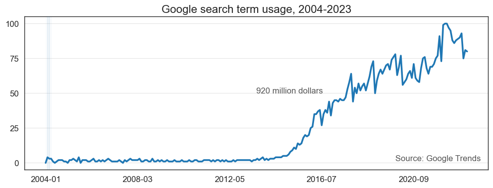
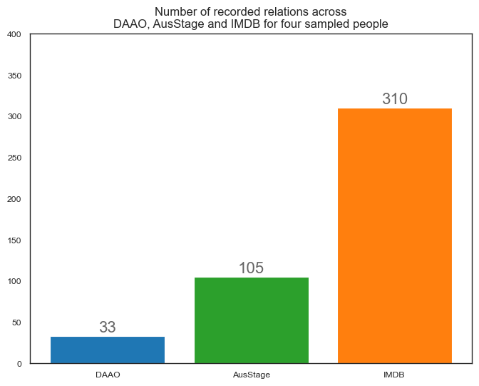
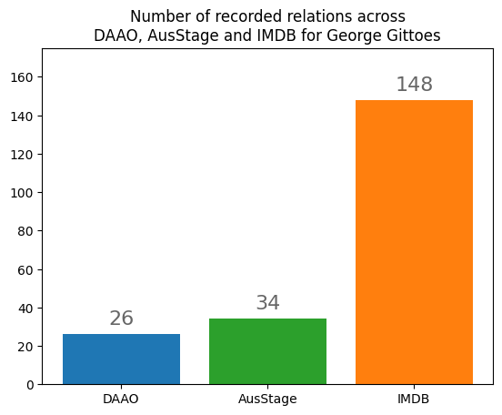
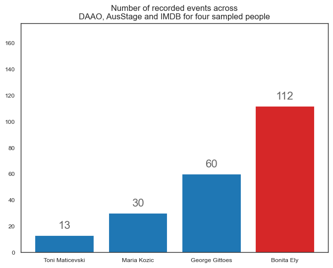
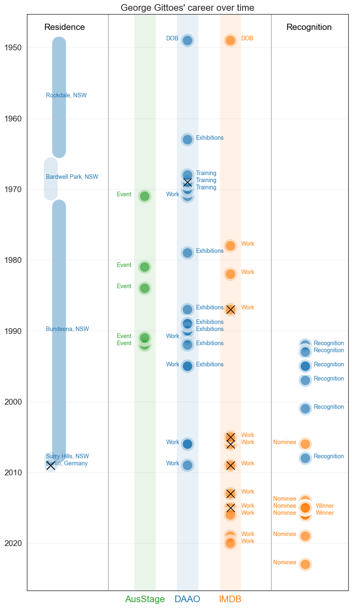
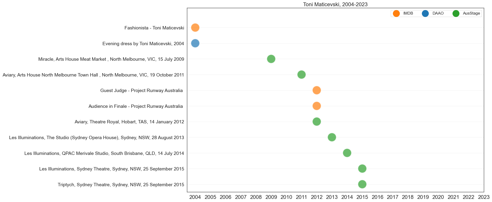

IMDB data
Contents
import pandas as pd
# read data
df = pd.read_csv('data/multiTimeline.csv')
df
| Month | Interest | |
|---|---|---|
| 0 | 2004-01 | 0 |
| 1 | 2004-02 | 4 |
| 2 | 2004-03 | 3 |
| 3 | 2004-04 | 3 |
| 4 | 2004-05 | 1 |
| ... | ... | ... |
| 225 | 2022-10 | 90 |
| 226 | 2022-11 | 93 |
| 227 | 2022-12 | 75 |
| 228 | 2023-01 | 81 |
| 229 | 2023-02 | 80 |
230 rows × 2 columns
import matplotlib.pyplot as plt
import numpy as np
import seaborn as sns
sns.set(style='white', context='paper', rc={'figure.figsize':(12, 4)})
# plot a time series with Interest as the y-axis and x-axis in years
df.plot(x='Month', y='Interest', color='tab:blue', linewidth=2.5, zorder=1)
# add source annotation in bottom right corner
plt.annotate('Source: Google Trends', xy=(0.8, 0.06), xycoords='axes fraction', fontsize=12, color='#555555', zorder=2)
# add source annotation in bottom right corner
plt.annotate('920 million dollars', xy=(0.5, 0.5), xycoords='axes fraction', fontsize=12, color='#555555')
# shade the plot post-GFC in red, and make it behind the plot
plt.axvspan('2004-01-01', '2008-09-01', color='tab:blue', alpha=0.025, zorder=3)
# shade the plot post-GFC in red, and make it behind the plot
plt.axvspan('2008-09-01', '2014-01-01', color='tab:blue', alpha=0.075, zorder=3)
# shade the plot post-GFC in red, and make it behind the plot
plt.axvspan('2014-01-01', '2023-02-01', color='tab:blue', alpha=0.025, zorder=3)
plt.xlabel('')
plt.grid(axis='y', alpha=0.5)
plt.gca().set_axisbelow(True)
plt.yticks(np.arange(0, 110, 25), fontsize=12)
plt.xticks(fontsize=12)
plt.title('Google search term usage, 2004-2023', fontsize=16)
plt.legend().remove()
plt.show()
# Numbers represent search interest relative to the highest point on the chart for the given region and time.
# A value of 100 is the peak popularity for the term. A value of 50 means that the term is half as popular.
# A score of 0 means that there was not enough data for this term."

# plot a time series with Interest as the y-axis and x-axis in years
df['Month'] = pd.to_datetime(df['Month'])
df.plot(x='Month', y='Interest')
# add y-axis grid
df.plot(x='Month', y='Interest', grid=True)
<AxesSubplot: xlabel='Month'>
IMDB data¶
import pandas as pd
# read data file with .tsv extension
daao_df = pd.read_csv('data/daao_biography_level_202202211719.csv')
---------------------------------------------------------------------------
KeyboardInterrupt Traceback (most recent call last)
Cell In [4], line 4
1 import pandas as pd
3 # read data file with .tsv extension
----> 4 daao_df = pd.read_csv('data/daao_biography_level_202202211719.csv')
File /opt/miniconda3/envs/tf2/lib/python3.9/site-packages/pandas/util/_decorators.py:211, in deprecate_kwarg.<locals>._deprecate_kwarg.<locals>.wrapper(*args, **kwargs)
209 else:
210 kwargs[new_arg_name] = new_arg_value
--> 211 return func(*args, **kwargs)
File /opt/miniconda3/envs/tf2/lib/python3.9/site-packages/pandas/util/_decorators.py:317, in deprecate_nonkeyword_arguments.<locals>.decorate.<locals>.wrapper(*args, **kwargs)
311 if len(args) > num_allow_args:
312 warnings.warn(
313 msg.format(arguments=arguments),
314 FutureWarning,
315 stacklevel=find_stack_level(inspect.currentframe()),
316 )
--> 317 return func(*args, **kwargs)
File /opt/miniconda3/envs/tf2/lib/python3.9/site-packages/pandas/io/parsers/readers.py:950, in read_csv(filepath_or_buffer, sep, delimiter, header, names, index_col, usecols, squeeze, prefix, mangle_dupe_cols, dtype, engine, converters, true_values, false_values, skipinitialspace, skiprows, skipfooter, nrows, na_values, keep_default_na, na_filter, verbose, skip_blank_lines, parse_dates, infer_datetime_format, keep_date_col, date_parser, dayfirst, cache_dates, iterator, chunksize, compression, thousands, decimal, lineterminator, quotechar, quoting, doublequote, escapechar, comment, encoding, encoding_errors, dialect, error_bad_lines, warn_bad_lines, on_bad_lines, delim_whitespace, low_memory, memory_map, float_precision, storage_options)
935 kwds_defaults = _refine_defaults_read(
936 dialect,
937 delimiter,
(...)
946 defaults={"delimiter": ","},
947 )
948 kwds.update(kwds_defaults)
--> 950 return _read(filepath_or_buffer, kwds)
File /opt/miniconda3/envs/tf2/lib/python3.9/site-packages/pandas/io/parsers/readers.py:611, in _read(filepath_or_buffer, kwds)
608 return parser
610 with parser:
--> 611 return parser.read(nrows)
File /opt/miniconda3/envs/tf2/lib/python3.9/site-packages/pandas/io/parsers/readers.py:1772, in TextFileReader.read(self, nrows)
1765 nrows = validate_integer("nrows", nrows)
1766 try:
1767 # error: "ParserBase" has no attribute "read"
1768 (
1769 index,
1770 columns,
1771 col_dict,
-> 1772 ) = self._engine.read( # type: ignore[attr-defined]
1773 nrows
1774 )
1775 except Exception:
1776 self.close()
File /opt/miniconda3/envs/tf2/lib/python3.9/site-packages/pandas/io/parsers/c_parser_wrapper.py:243, in CParserWrapper.read(self, nrows)
241 try:
242 if self.low_memory:
--> 243 chunks = self._reader.read_low_memory(nrows)
244 # destructive to chunks
245 data = _concatenate_chunks(chunks)
File /opt/miniconda3/envs/tf2/lib/python3.9/site-packages/pandas/_libs/parsers.pyx:808, in pandas._libs.parsers.TextReader.read_low_memory()
File /opt/miniconda3/envs/tf2/lib/python3.9/site-packages/pandas/_libs/parsers.pyx:890, in pandas._libs.parsers.TextReader._read_rows()
File /opt/miniconda3/envs/tf2/lib/python3.9/site-packages/pandas/_libs/parsers.pyx:1037, in pandas._libs.parsers.TextReader._convert_column_data()
File /opt/miniconda3/envs/tf2/lib/python3.9/site-packages/pandas/_libs/parsers.pyx:1083, in pandas._libs.parsers.TextReader._convert_tokens()
File /opt/miniconda3/envs/tf2/lib/python3.9/site-packages/pandas/_libs/parsers.pyx:1158, in pandas._libs.parsers.TextReader._convert_with_dtype()
File /opt/miniconda3/envs/tf2/lib/python3.9/site-packages/pandas/core/dtypes/common.py:1434, in is_extension_array_dtype(arr_or_dtype)
1425 # Note: if other EA dtypes are ever held in HybridBlock, exclude those
1426 # here too.
1427 # NB: need to check DatetimeTZDtype and not is_datetime64tz_dtype
1428 # to exclude ArrowTimestampUSDtype
1429 return isinstance(dtype, ExtensionDtype) and not isinstance(
1430 dtype, (DatetimeTZDtype, PeriodDtype)
1431 )
-> 1434 def is_extension_array_dtype(arr_or_dtype) -> bool:
1435 """
1436 Check if an object is a pandas extension array type.
1437
(...)
1477 False
1478 """
1479 dtype = getattr(arr_or_dtype, "dtype", arr_or_dtype)
KeyboardInterrupt:
daao_df[''].nunique()
import pandas as pd
# read data file with .tsv extension
imdb_df = pd.read_csv('data/name.basics.tsv', sep='\t')
# fix UnicodeDecodeError: 'utf-8' codec can't decode byte 0xe9 in position 1: invalid continuation byte
acde_df = pd.read_csv('data/dataviz_position_task_dataset.csv', encoding='latin-1')
imdb_df.columns
Index(['nconst', 'primaryName', 'birthYear', 'deathYear', 'primaryProfession',
'knownForTitles'],
dtype='object')
x = 'Chris Edwards'
# get the first name
x.split(' ')[0]
# get the last name
x.split(' ')[-1]
len(x.split(' '))
2
x.strip().replace(' ',' ')
'Bill Onus'
for x,y in zip(acde_df['display_name_ausstage'], acde_df['same_name']):
<zip at 0x371edacc0>
count = 0
for x,y in zip(acde_df['display_name_ausstage'], acde_df['same_name']):
if count % 20 == 0: print(count)
count += 1
x = x.strip().replace(' ',' ')
y = y.strip().replace(' ',' ')
if (len(x.split(' ')) == 2) | (len(y.split(' ')) == 2):
count += 1
try:
this_person = imdb_df[(imdb_df['primaryName'].str.contains(x.split(' ')[0],na=False)) & \
(imdb_df['primaryName'].str.contains(x.split(' ')[-1],na=False))]
except:
this_person = imdb_df[(imdb_df['primaryName'].str.contains(y.split(' ')[0],na=False)) & \
(imdb_df['primaryName'].str.contains(y.split(' ')[-1],na=False))]
acde_df.loc[acde_df['display_name_ausstage'] == x, 'number_matches'] = this_person.shape[0]
elif (x == 'Tori de Mestre') | (x == 'Ian de Gruchy'):
this_person = imdb_df[(imdb_df['primaryName'].str.contains(x.split(' ')[0],na=False)) & \
(imdb_df['primaryName'].str.contains(' '.join(x.split(' ')[-2:]),na=False))]
elif (x == 'Del Kathryn Barton'):
this_person = imdb_df[(imdb_df['primaryName'].str.contains(' '.join(x.split(' ')[0:2]))) & \
(imdb_df['primaryName'].str.contains(x.split(' ')[-1],na=False))]
elif (x == 'Freddy Jangala Patrick'):
this_person = imdb_df[(imdb_df['primaryName'].str.contains(x.split(' ')[0],na=False)) & \
(imdb_df['primaryName'].str.contains(x.split(' ')[1],na=False)) & \
(imdb_df['primaryName'].str.contains(x.split(' ')[2],na=False))]
else:
print(x,y)
pass
0
20
40
60
80
100
120
140
160
180
200
220
240
380
400
420
440
460
480
700
720
740
760
780
# write to csv
acde_df.to_csv('data/ausstage_march_symp.csv', index=False)
p
(401, 26)
imdb_df
| nconst | primaryName | birthYear | deathYear | primaryProfession | knownForTitles | |
|---|---|---|---|---|---|---|
| 0 | nm0000001 | Fred Astaire | 1899 | 1987 | soundtrack,actor,miscellaneous | tt0045537,tt0072308,tt0053137,tt0050419 |
| 1 | nm0000002 | Lauren Bacall | 1924 | 2014 | actress,soundtrack | tt0071877,tt0037382,tt0038355,tt0117057 |
| 2 | nm0000003 | Brigitte Bardot | 1934 | \N | actress,soundtrack,music_department | tt0057345,tt0049189,tt0054452,tt0056404 |
| 3 | nm0000004 | John Belushi | 1949 | 1982 | actor,soundtrack,writer | tt0077975,tt0080455,tt0078723,tt0072562 |
| 4 | nm0000005 | Ingmar Bergman | 1918 | 2007 | writer,director,actor | tt0050986,tt0050976,tt0083922,tt0060827 |
| ... | ... | ... | ... | ... | ... | ... |
| 12319802 | nm9993714 | Romeo del Rosario | \N | \N | animation_department,art_department | tt2455546,tt11657662,tt14069590 |
| 12319803 | nm9993716 | Essias Loberg | \N | \N | NaN | \N |
| 12319804 | nm9993717 | Harikrishnan Rajan | \N | \N | cinematographer | tt8736744 |
| 12319805 | nm9993718 | Aayush Nair | \N | \N | cinematographer | \N |
| 12319806 | nm9993719 | Andre Hill | \N | \N | NaN | \N |
12319807 rows × 6 columns
exact_matches = pd.DataFrame()
# acde_df = df.copy() - ivy's version
for idx,x in enumerate(acde_df['display_name_ausstage'].unique()):
if idx % 25 == 0: print(idx)
x2 = x.strip().replace(' ',' ')
this_person = imdb_df[imdb_df['primaryName'] == x2].copy()
if this_person.shape[0] == 1:
this_person['display_name_ausstage'] = x
exact_matches = pd.concat([exact_matches, this_person], axis=0)
# acde_df.loc[acde_df['display_name_ausstage'] == x, 'exact_matches'] = this_person.shape[0]
# acde_df.loc[acde_df['display_name_ausstage'] == x, 'exact_matches_nos'] = ','.join(this_person['nconst'].unique())
0
25
50
75
100
125
150
175
200
225
250
275
300
325
350
375
pd.merge(acde_df, exact_matches, on='display_name_ausstage')
| same_name | display_name_ausstage | first_name_ausstage | first_name_daao | middle_name_ausstage | last_name_ausstage | last_name_daao | gender_ausstage | gender_daao | year_of_birth_ausstage | ... | all_names_unf_ausstage | ori_id_ausstage | ori_id_daao | ori_id_unf_ausstage | nconst | primaryName | birthYear | deathYear | primaryProfession | knownForTitles | |
|---|---|---|---|---|---|---|---|---|---|---|---|---|---|---|---|---|---|---|---|---|---|
| 0 | Les Tanner | Les Tanner | Les | Les | None | Tanner | Tanner | Male | Male | NaN | ... | [Les Tanner, Pseud: Michael King] | {'original_id': '243158', 'original_id_unf_als... | {'birth': {'note': '', 'coverage': {'date': '1... | 16319 | nm4275620 | Les Tanner | \N | \N | art_department,miscellaneous | tt1822376 |
| 1 | Max Dupain | Max Dupain | Max | Max | None | Dupain | Dupain | Male | Male | 1911.0 | ... | [Max Dupain] | {'original_id': '436343', 'original_id_unf_als... | {'birth': {'note': '', 'coverage': {'date': '1... | 57570 | nm1865019 | Max Dupain | \N | \N | camera_department | \N |
| 2 | Maria Kozic | Maria Kozic | Maria | Maria | None | Kozic | Kozic | Female | Female | NaN | ... | [Maria Kozic] | {'original_id': '255225', 'original_id_unf_als... | {'birth': {'note': '', 'coverage': {'date': '1... | 34444 | nm0468857 | Maria Kozic | \N | \N | actress,soundtrack,art_director | tt0271157,tt4978482,tt0445039,tt0106450 |
| 3 | Destiny Deacon | Destiny Deacon | Destiny | Destiny | None | Deacon | Deacon | Female | Female | NaN | ... | [ Destiny Deacon , Destiny Deacon] | {'original_id': '462023', 'original_id_unf_als... | {'birth': {'note': '', 'coverage': {'date': '1... | 93089 | nm9716539 | Destiny Deacon | \N | \N | director,actress,writer | \N |
| 4 | Rosemary Laing | Rosemary Laing | Rosemary | Rosemary | None | Laing | Laing | Female | Female | NaN | ... | [Rosemary Laing] | {'original_id': '513847', 'original_id_unf_als... | {'birth': {'note': '', 'coverage': {'date': '1... | 138309 | nm8787163 | Rosemary Laing | \N | \N | NaN | tt1782248,tt7225594 |
| ... | ... | ... | ... | ... | ... | ... | ... | ... | ... | ... | ... | ... | ... | ... | ... | ... | ... | ... | ... | ... | ... |
| 104 | Albie Thoms | Albie Thoms | Albie | Albie | None | Thoms | Thoms | Male | Male | NaN | ... | [Geoffrey Thoms; Albie, Albie Thoms] | {'original_id': '418125', 'original_id_unf_als... | {'birth': {'note': '', 'coverage': {'date': '1... | 51566 | nm0860864 | Albie Thoms | 1941 | 2012 | director,producer,editor | tt1798114,tt0079693,tt0867597,tt1765904 |
| 105 | Robert Bolton | Robert Bolton | Robert | Robert | None | Bolton | Bolton | Male | Male | NaN | ... | [Robert Bolton] | {'original_id': '228792', 'original_id_unf_als... | {'birth': {'note': '', 'coverage': {'date': '1... | 9034 | nm6625703 | Robert Bolton | \N | \N | actor,writer,composer | tt3875448,tt3746662,tt15010528,tt3857940 |
| 106 | Russell Drysdale | Russell Drysdale | Russell | Russell | None | Drysdale | Drysdale | Male | Male | 1912.0 | ... | [Russell Drysdale] | {'original_id': '436394', 'original_id_unf_als... | {'birth': {'note': '', 'coverage': {'date': '1... | 59583 | nm4217771 | Russell Drysdale | 1912 | 1981 | writer,art_department | tt14392544,tt1793275,tt2337189,tt6547248 |
| 107 | Daniel Askill | Daniel Askill | Daniel | Daniel | None | Askill | Askill | Male | Male | NaN | ... | [Daniel Askill] | {'original_id': '440151', 'original_id_unf_als... | {'birth': {'note': '', 'coverage': {'date': '1... | 1713 | nm1747324 | Daniel Askill | \N | \N | director,writer,producer | tt0430755,tt10513980,tt11512720 |
| 108 | Ruby Collins | Ruby Collins | Ruby | Ruby Nakamarra | None | Collins | Collins | Female | Female | NaN | ... | [Ruby Collins] | {'original_id': '504637', 'original_id_unf_als... | {'birth': {'note': '', 'coverage': {'date': '1... | 131201 | nm4446907 | Ruby Collins | \N | \N | actress | tt1754577 |
109 rows × 31 columns
acde_imdb_merged = pd.merge(acde_df, exact_matches, on='display_name_ausstage')
print(acde_imdb_merged['display_name_ausstage'].nunique())
print(acde_imdb_merged['gender_daao'].value_counts(),'\n\n', acde_imdb_merged['gender_ausstage'].value_counts())
# write to csv
# acde_imdb_merged.to_csv('data/ausstage_march_symp_exact.csv', index=False)
109
Male 68
Female 41
Name: gender_daao, dtype: int64
Male 64
Female 43
Unknown 2
Name: gender_ausstage, dtype: int64
# Anomalies identified with gender records
# remove Pat Oliphant - appears to be two different people
acde_imdb_merged = acde_imdb_merged[acde_imdb_merged['display_name_ausstage'] != 'Pat Oliphant']
# update Toni Maticevski - same person but listed as female in AusStage?
acde_imdb_merged.loc[acde_imdb_merged['display_name_ausstage'] == 'Toni Maticevski','gender_ausstage'] = 'Male'
# update Brook Andrew - same person but listed as female in AusStage?
acde_imdb_merged.loc[acde_imdb_merged['display_name_ausstage'] == 'Brook Andrew','gender_ausstage'] = 'Male'
# update Bonita Ely - listed as Unknown in AusStage
acde_imdb_merged.loc[acde_imdb_merged['display_name_ausstage'] == 'Bonita Ely','gender_ausstage'] = 'Female'
# update J. Wright - listed as Unknown in AusStage
acde_imdb_merged.loc[acde_imdb_merged['display_name_ausstage'] == 'J. Wright','gender_ausstage'] = 'Male'
# we identified some mismatches - these are not the same person
nonmatches_names = ['Raymond Arnold','Janet Dawson','Syd Miller','Eileen Cook', 'Lauren Berkowitz']
acde_imdb_merged = acde_imdb_merged[~acde_imdb_merged['display_name_ausstage']\
.isin(nonmatches_names)]
# we omit rows with no record knownForTitles data
acde_imdb_merged = acde_imdb_merged[acde_imdb_merged['knownForTitles'] != '\\N']
print(acde_imdb_merged['gender_daao'].value_counts(),'\n\n', acde_imdb_merged['gender_ausstage'].value_counts())
acde_imdb_merged.shape
Male 58
Female 29
Name: gender_daao, dtype: int64
Male 58
Female 29
Name: gender_ausstage, dtype: int64
(87, 31)
acde_imdb_merged['knownForTitles']
acde_imdb_expanded = acde_imdb_merged.assign(titleId=acde_imdb_merged['knownForTitles']\
.str.split(',')).explode('titleId').reset_index(drop=True)
# keep only rows with more than 2 occurrences
acde_imdb_expanded[acde_imdb_expanded['titleId'].isin(acde_imdb_expanded['titleId'].value_counts()[acde_imdb_expanded['titleId'].value_counts() > 1].index)]
# acde_imdb_expanded.display_name_ausstage.value_counts().reset_index()
| same_name | display_name_ausstage | first_name_ausstage | first_name_daao | middle_name_ausstage | last_name_ausstage | last_name_daao | gender_ausstage | gender_daao | year_of_birth_ausstage | ... | ori_id_ausstage | ori_id_daao | ori_id_unf_ausstage | nconst | primaryName | birthYear | deathYear | primaryProfession | knownForTitles | titleId | |
|---|---|---|---|---|---|---|---|---|---|---|---|---|---|---|---|---|---|---|---|---|---|
| 13 | Bronwyn Bancroft | Bronwyn Bancroft | Bronwyn | Bronwyn | None | Bancroft | Bancroft | Female | Female | NaN | ... | {'original_id': '243712', 'original_id_unf_als... | {'birth': {'note': '', 'coverage': {'date': '1... | 39879 | nm11338369 | Bronwyn Bancroft | \N | \N | NaN | tt0143055 | tt0143055 |
| 18 | Jeffrey Smart | Jeffrey Smart | Jeffrey | Jeffrey | None | Smart | Smart | Male | Male | NaN | ... | {'original_id': '228779', 'original_id_unf_als... | {'birth': {'note': '', 'coverage': {'date': '1... | 9021 | nm7045275 | Jeffrey Smart | \N | \N | NaN | tt4343716,tt5233498 | tt4343716 |
| 47 | Desmonde Downing | Desmonde Downing | Desmonde | Desmonde | None | Downing | Downing | Female | Female | 1920.0 | ... | {'original_id': '228546', 'original_id_unf_als... | {'birth': {'note': '', 'coverage': {'date': '1... | 10641 | nm1257013 | Desmonde Downing | \N | \N | production_designer,art_department | tt0069862,tt0047189,tt0159850,tt0377159 | tt0069862 |
| 64 | Arthur Boyd | Arthur Boyd | Arthur | Arthur | None | Boyd | Boyd | Male | Male | NaN | ... | {'original_id': '245462', 'original_id_unf_als... | {'birth': {'note': '', 'coverage': {'date': '1... | 37053 | nm4110324 | Arthur Boyd | 1920 | 1999 | producer | tt0077082,tt0244268,tt6547248,tt1737097 | tt6547248 |
| 96 | Cul Cullen | Cul Cullen | Cul | Fred | None | Cullen | Cullen | Male | Male | NaN | ... | {'original_id': '488908', 'original_id_unf_als... | {'birth': {'note': '', 'coverage': {'date': '1... | 116970 | nm0191454 | Cul Cullen | 1934 | 1982 | actor,writer | tt0196279,tt0084296,tt0067408,tt0129685 | tt0129685 |
| 105 | Albert Tucker | Albert Tucker | Albert | Albert | None | Tucker | Tucker | Male | Male | NaN | ... | {'original_id': '227289', 'original_id_unf_als... | {'birth': {'note': '', 'coverage': {'date': '1... | 9579 | nm1387750 | Albert Tucker | \N | \N | art_department | tt1792630,tt4343716 | tt4343716 |
| 142 | Quentin Hole | Quentin Hole | Quentin | Quentin | None | Hole | Hole | Male | Male | NaN | ... | {'original_id': '229830', 'original_id_unf_als... | {'birth': {'note': '', 'coverage': {'date': '1... | 11948 | nm0390419 | Quentin Hole | \N | \N | production_designer,art_department,art_director | tt0425716,tt0077999,tt0069862,tt0086676 | tt0069862 |
| 151 | Betty Dyson | Betty Dyson | Betty | Betty | None | Dyson | Dyson | Female | Female | NaN | ... | {'original_id': '228914', 'original_id_unf_als... | {'birth': {'note': '', 'coverage': {'date': '1... | 10390 | nm0246018 | Betty Dyson | \N | \N | actress | tt0068114,tt0386011,tt0129685,tt0083792 | tt0129685 |
| 162 | Norman Hetherington | Norman Hetherington | Norman | Norman | None | Hetherington | Hetherington | Male | Male | 1921.0 | ... | {'original_id': '444889', 'original_id_unf_als... | {'birth': {'note': '', 'coverage': {'date': '1... | 82680 | nm1665194 | Norman Hetherington | 1921 | 2010 | actor,miscellaneous | tt0060025,tt0285751,tt0407361,tt0143055 | tt0407361 |
| 163 | Norman Hetherington | Norman Hetherington | Norman | Norman | None | Hetherington | Hetherington | Male | Male | 1921.0 | ... | {'original_id': '444889', 'original_id_unf_als... | {'birth': {'note': '', 'coverage': {'date': '1... | 82680 | nm1665194 | Norman Hetherington | 1921 | 2010 | actor,miscellaneous | tt0060025,tt0285751,tt0407361,tt0143055 | tt0143055 |
| 176 | Harry Reade | Harry Reade | Harry | Harry | None | Reade | Reade | Male | Male | 1927.0 | ... | {'original_id': '246016', 'original_id_unf_als... | {'birth': {'note': '', 'coverage': {'date': '1... | 35381 | nm4292456 | Harry Reade | \N | \N | animation_department,director | tt16915420,tt1829645,tt1829656,tt0407361 | tt0407361 |
| 213 | Russell Drysdale | Russell Drysdale | Russell | Russell | None | Drysdale | Drysdale | Male | Male | 1912.0 | ... | {'original_id': '436394', 'original_id_unf_als... | {'birth': {'note': '', 'coverage': {'date': '1... | 59583 | nm4217771 | Russell Drysdale | 1912 | 1981 | writer,art_department | tt14392544,tt1793275,tt2337189,tt6547248 | tt6547248 |
12 rows × 32 columns
acde_imdb_expanded.display_name_ausstage.value_counts().reset_index().head(31)
acde_imdb_expanded.display_name_ausstage.value_counts().mean()
acde_imdb_expanded.display_name_ausstage.value_counts().median()
2.0
acde_imdb_expanded[acde_imdb_expanded.display_name_ausstage == 'Rolf Harris']
| same_name | display_name_ausstage | first_name_ausstage | first_name_daao | middle_name_ausstage | last_name_ausstage | last_name_daao | gender_ausstage | gender_daao | year_of_birth_ausstage | ... | ori_id_ausstage | ori_id_daao | ori_id_unf_ausstage | nconst | primaryName | birthYear | deathYear | primaryProfession | knownForTitles | titleId | |
|---|---|---|---|---|---|---|---|---|---|---|---|---|---|---|---|---|---|---|---|---|---|
| 26 | Rolf Harris | Rolf Harris | Rolf | Rolf | NaN | Harris | Harris | Male | Male | NaN | ... | 441506 | 4da1984cb538b73d9300d23d | 80072 | nm0365271 | Rolf Harris | 1930 | \N | soundtrack,actor,music_department | tt1965057,tt0455824,tt2004432,tt3680410 | tt1965057 |
| 27 | Rolf Harris | Rolf Harris | Rolf | Rolf | NaN | Harris | Harris | Male | Male | NaN | ... | 441506 | 4da1984cb538b73d9300d23d | 80072 | nm0365271 | Rolf Harris | 1930 | \N | soundtrack,actor,music_department | tt1965057,tt0455824,tt2004432,tt3680410 | tt0455824 |
| 28 | Rolf Harris | Rolf Harris | Rolf | Rolf | NaN | Harris | Harris | Male | Male | NaN | ... | 441506 | 4da1984cb538b73d9300d23d | 80072 | nm0365271 | Rolf Harris | 1930 | \N | soundtrack,actor,music_department | tt1965057,tt0455824,tt2004432,tt3680410 | tt2004432 |
| 29 | Rolf Harris | Rolf Harris | Rolf | Rolf | NaN | Harris | Harris | Male | Male | NaN | ... | 441506 | 4da1984cb538b73d9300d23d | 80072 | nm0365271 | Rolf Harris | 1930 | \N | soundtrack,actor,music_department | tt1965057,tt0455824,tt2004432,tt3680410 | tt3680410 |
4 rows × 32 columns
# read data file with .tsv extension
imdb_titleakas_df = pd.read_csv('data/title.akas.tsv', sep='\t')
/var/folders/rb/mjsh2q916fl5sgghntjck66h0000gn/T/ipykernel_68372/147457272.py:2: DtypeWarning: Columns (7) have mixed types. Specify dtype option on import or set low_memory=False.
imdb_titleakas_df = pd.read_csv('data/title.akas.tsv', sep='\t')
# read data file with .tsv extension
imdb_titlebasics_df = pd.read_csv('data/title.basics.tsv', sep='\t')
/var/folders/rb/mjsh2q916fl5sgghntjck66h0000gn/T/ipykernel_68372/2545004822.py:2: DtypeWarning: Columns (4) have mixed types. Specify dtype option on import or set low_memory=False.
imdb_titlebasics_df = pd.read_csv('data/title.basics.tsv', sep='\t')
acde_imdb_withtitles = pd.merge(acde_imdb_expanded, imdb_titleakas_df, on='titleId')
acde_imdb_withtitles.head()
| same_name | display_name_ausstage | first_name_ausstage | first_name_daao | middle_name_ausstage | last_name_ausstage | last_name_daao | gender_ausstage | gender_daao | year_of_birth_ausstage | ... | primaryProfession | knownForTitles | titleId | ordering | title | region | language | types | attributes | isOriginalTitle | |
|---|---|---|---|---|---|---|---|---|---|---|---|---|---|---|---|---|---|---|---|---|---|
| 0 | Les Tanner | Les Tanner | Les | Les | None | Tanner | Tanner | Male | Male | NaN | ... | art_department,miscellaneous | tt1822376 | tt1822376 | 1 | Words for Freedom | \N | \N | original | \N | 1 |
| 1 | Les Tanner | Les Tanner | Les | Les | None | Tanner | Tanner | Male | Male | NaN | ... | art_department,miscellaneous | tt1822376 | tt1822376 | 2 | Words for Freedom | AU | \N | imdbDisplay | \N | 0 |
| 2 | Maria Kozic | Maria Kozic | Maria | Maria | None | Kozic | Kozic | Female | Female | NaN | ... | actress,soundtrack,art_director | tt0271157,tt4978482,tt0445039,tt0106450 | tt0271157 | 1 | Salt, Saliva, Sperm and Sweat | AU | \N | imdbDisplay | \N | 0 |
| 3 | Maria Kozic | Maria Kozic | Maria | Maria | None | Kozic | Kozic | Female | Female | NaN | ... | actress,soundtrack,art_director | tt0271157,tt4978482,tt0445039,tt0106450 | tt0271157 | 2 | Salt, Saliva, Sperm and Sweat | \N | \N | original | \N | 1 |
| 4 | Maria Kozic | Maria Kozic | Maria | Maria | None | Kozic | Kozic | Female | Female | NaN | ... | actress,soundtrack,art_director | tt0271157,tt4978482,tt0445039,tt0106450 | tt4978482 | 1 | Under a Stone | \N | \N | original | \N | 1 |
5 rows × 39 columns
acde_imdb_withtitles2 = pd.merge(acde_imdb_withtitles, imdb_titlebasics_df,
left_on='titleId', right_on='tconst')
acde_imdb_withtitles2.shape
# nonmatches_names = ['Raymond Arnold','Janet Dawson','Syd Miller','Eileen Cook', 'Lauren Berkowitz']
# acde_imdb_withtitles2 = acde_imdb_withtitles2[~acde_imdb_withtitles2['display_name_ausstage']\
# .isin(nonmatches_names)]
(1153, 48)
# acde_imdb_withtitles2['runtimeMinutes'] = acde_imdb_withtitles2['runtimeMinutes'].apply(lambda x: x if x != '\\N' else -1)
# acde_imdb_withtitles2['runtimeMinutes'] = acde_imdb_withtitles2['runtimeMinutes'].astype(int)
movie_cond = (acde_imdb_withtitles2['titleType'] == 'movie')
au_cond = (acde_imdb_withtitles2['region'] == 'AU')
au_movies = acde_imdb_withtitles2[movie_cond & au_cond]['title'].unique()
non_au_movies = acde_imdb_withtitles2[movie_cond & ~au_cond]['title'].unique()
print(len(au_movies), len(non_au_movies))
72 351
acde_imdb_withtitles2.drop_duplicates(['title']).display_name_ausstage.value_counts()
Alan Oldfield 56
Rolf Harris 41
Reg Mombassa 29
Desmonde Downing 25
Sam Jinks 25
..
Harry Wedge 1
Anne Zahalka 1
Simon Kneebone 1
Leigh Hobbs 1
Ruby Collins 1
Name: display_name_ausstage, Length: 87, dtype: int64
acde_imdb_withtitles.columns
Index(['same_name', 'display_name_ausstage', 'first_name_ausstage',
'first_name_daao', 'middle_name_ausstage', 'last_name_ausstage',
'last_name_daao', 'gender_ausstage', 'gender_daao',
'year_of_birth_ausstage', 'year_of_birth_daao',
'year_of_death_ausstage', 'year_of_death_daao', 'roles_ausstage',
'roles_daao', 'artist_birth_place_daao', 'nationality_ausstage',
'other_names_ausstage', 'other_names_daao', 'all_names_daao',
'all_names_indiv_ausstage', 'all_names_unf_ausstage', 'ori_id_ausstage',
'ori_id_daao', 'ori_id_unf_ausstage', 'nconst', 'primaryName',
'birthYear', 'deathYear', 'primaryProfession', 'knownForTitles',
'titleId', 'ordering', 'title', 'region', 'language', 'types',
'attributes', 'isOriginalTitle'],
dtype='object')
acde_imdb_withtitles[acde_imdb_withtitles.gender_daao=='Female']\
.sort_values('year_of_birth_daao')['display_name_ausstage'].unique()
array(['Florence Taylor', 'Gwen Sherwood', 'Thelma Thomas', 'Betty Dyson',
'Mary Durack', 'Marjorie Fisher', 'Margaret Senior',
'Desmonde Downing', 'Mirka Mora', ' Betty Churcher ',
'Vivienne Binns', 'Penny Murphy', 'Prue Acton', 'Lee Whitmore',
'Ruby Collins', 'Jenny Kee', 'Rosemary Valadon', 'Silvia Jahnsons',
'Toni Robertson', 'Deborah Vaughan', 'Maria Kozic', 'Anne Zahalka',
'Bronwyn Bancroft', 'Rosemary Laing', 'Gail Mabo', 'Helen Britton',
'Del Kathryn Barton', 'Zanny Begg', 'Mandy Ord'], dtype=object)
acde_imdb_withtitles2[acde_imdb_withtitles2.same_name == 'George Gittoes']['tconst'].nunique()
4
acde_imdb_withtitles2[(acde_imdb_withtitles2['title'].isin(international_movies)) &\
(acde_imdb_withtitles2['region'].isin(['US']))].head(1).T
| 232 | |
|---|---|
| same_name | George Gittoes |
| display_name_ausstage | George Gittoes |
| first_name_ausstage | George |
| first_name_daao | George |
| middle_name_ausstage | NaN |
| last_name_ausstage | Gittoes |
| last_name_daao | Gittoes |
| gender_ausstage | Male |
| gender_daao | Male |
| year_of_birth_ausstage | NaN |
| year_of_birth_daao | 1949 |
| year_of_death_ausstage | NaN |
| year_of_death_daao | NaN |
| roles_ausstage | ['Designer', 'Speaker'] |
| roles_daao | [('artist', 'Painter'), ('artist', 'Performanc... |
| artist_birth_place_daao | Sydney, NSW |
| nationality_ausstage | Australian |
| other_names_ausstage | [] |
| other_names_daao | [('George Noel', 'Gittoes')] |
| all_names_daao | ['George Gittoes', 'George Noel Gittoes'] |
| all_names_indiv_ausstage | ['George Gittoes'] |
| all_names_unf_ausstage | ['George Gittoes'] |
| ori_id_ausstage | 234780 |
| ori_id_daao | 4da1a91db538b73d9301af15 |
| ori_id_unf_ausstage | 21690 |
| nconst | nm1982407 |
| primaryName | George Gittoes |
| birthYear | 1949 |
| deathYear | \N |
| primaryProfession | director,cinematographer,producer |
| knownForTitles | tt10514370,tt0795448,tt0470161,tt0361596 |
| titleId | tt0361596 |
| ordering | 2 |
| title | Fahrenheit 911 |
| region | US |
| language | \N |
| types | working |
| attributes | \N |
| isOriginalTitle | 0 |
| tconst | tt0361596 |
| titleType | movie |
| primaryTitle | Fahrenheit 9/11 |
| originalTitle | Fahrenheit 9/11 |
| isAdult | 0 |
| startYear | 2004 |
| endYear | \N |
| runtimeMinutes | 122 |
| genres | Documentary,Drama,War |
acde_imdb_withtitles2[acde_imdb_withtitles2['title'] == 'Running on Empty Dreams'].T
| 55 | 56 | 57 | 58 | |
|---|---|---|---|---|
| same_name | Raymond Arnold | Raymond Arnold | Raymond Arnold | Raymond Arnold |
| display_name_ausstage | Raymond Arnold | Raymond Arnold | Raymond Arnold | Raymond Arnold |
| first_name_ausstage | Raymond | Raymond | Raymond | Raymond |
| first_name_daao | Raymond | Raymond | Raymond | Raymond |
| middle_name_ausstage | NaN | NaN | NaN | NaN |
| last_name_ausstage | Arnold | Arnold | Arnold | Arnold |
| last_name_daao | Arnold | Arnold | Arnold | Arnold |
| gender_ausstage | Male | Male | Male | Male |
| gender_daao | Male | Male | Male | Male |
| year_of_birth_ausstage | 1950.0 | 1950.0 | 1950.0 | 1950.0 |
| year_of_birth_daao | 1950 | 1950 | 1950 | 1950 |
| year_of_death_ausstage | NaN | NaN | NaN | NaN |
| year_of_death_daao | NaN | NaN | NaN | NaN |
| roles_ausstage | [''] | [''] | [''] | [''] |
| roles_daao | [('artist', 'Printmaker')] | [('artist', 'Printmaker')] | [('artist', 'Printmaker')] | [('artist', 'Printmaker')] |
| artist_birth_place_daao | NaN | NaN | NaN | NaN |
| nationality_ausstage | NaN | NaN | NaN | NaN |
| other_names_ausstage | [] | [] | [] | [] |
| other_names_daao | [('Ray', 'Arnold')] | [('Ray', 'Arnold')] | [('Ray', 'Arnold')] | [('Ray', 'Arnold')] |
| all_names_daao | ['Ray Arnold', 'Raymond Arnold'] | ['Ray Arnold', 'Raymond Arnold'] | ['Ray Arnold', 'Raymond Arnold'] | ['Ray Arnold', 'Raymond Arnold'] |
| all_names_indiv_ausstage | ['Raymond Arnold'] | ['Raymond Arnold'] | ['Raymond Arnold'] | ['Raymond Arnold'] |
| all_names_unf_ausstage | ['Raymond Arnold'] | ['Raymond Arnold'] | ['Raymond Arnold'] | ['Raymond Arnold'] |
| ori_id_ausstage | 458211 | 458211 | 458211 | 458211 |
| ori_id_daao | 4da1951bb538b73d93001ae7 | 4da1951bb538b73d93001ae7 | 4da1951bb538b73d93001ae7 | 4da1951bb538b73d93001ae7 |
| ori_id_unf_ausstage | 90211 | 90211 | 90211 | 90211 |
| nconst | nm6864152 | nm6864152 | nm6864152 | nm6864152 |
| primaryName | Raymond Arnold | Raymond Arnold | Raymond Arnold | Raymond Arnold |
| birthYear | \N | \N | \N | \N |
| deathYear | \N | \N | \N | \N |
| primaryProfession | actor | actor | actor | actor |
| knownForTitles | tt1090679 | tt1090679 | tt1090679 | tt1090679 |
| titleId | tt1090679 | tt1090679 | tt1090679 | tt1090679 |
| ordering | 2 | 3 | 4 | 5 |
| title | Running on Empty Dreams | Running on Empty Dreams | Running on Empty Dreams | Running on Empty Dreams |
| region | GB | \N | IN | US |
| language | \N | \N | en | \N |
| types | imdbDisplay | original | imdbDisplay | imdbDisplay |
| attributes | \N | \N | \N | \N |
| isOriginalTitle | 0 | 1 | 0 | 0 |
| tconst | tt1090679 | tt1090679 | tt1090679 | tt1090679 |
| titleType | movie | movie | movie | movie |
| primaryTitle | Running on Empty Dreams | Running on Empty Dreams | Running on Empty Dreams | Running on Empty Dreams |
| originalTitle | Running on Empty Dreams | Running on Empty Dreams | Running on Empty Dreams | Running on Empty Dreams |
| isAdult | 0 | 0 | 0 | 0 |
| startYear | 2009 | 2009 | 2009 | 2009 |
| endYear | \N | \N | \N | \N |
| runtimeMinutes | 120 | 120 | 120 | 120 |
| genres | Drama,Romance | Drama,Romance | Drama,Romance | Drama,Romance |
# get list difference of two lists
international_movies = list(set(non_au_movies) - set(au_movies))
acde_imdb_withtitles2[acde_imdb_withtitles2['title'].isin(international_movies)]['region'].value_counts()
\N 29
US 24
GB 24
BR 22
RU 20
GR 19
FR 14
JP 13
ES 13
CA 13
PL 13
FI 12
DE 11
IT 11
HU 11
PT 11
BG 10
TR 9
RO 6
SE 6
AR 6
XWG 5
BE 5
XWW 5
UA 4
SUHH 4
MX 4
DK 4
RS 4
NO 3
IR 2
KR 2
AT 2
HR 2
CO 2
TW 2
LV 2
CZ 2
SI 1
HK 1
VN 1
NL 1
EE 1
LT 1
PE 1
ZA 1
SK 1
SG 1
XYU 1
UY 1
Name: region, dtype: int64
acde_imdb_withtitles2['title']
acde_imdb_withtitles[(acde_imdb_withtitles['language'] != '\\N')]['title'].value_counts()
The Twelve 14
Blaze 12
Mirka 7
Australia 6
Wolf Creek 2 5
..
Дългият Джон Силвър 1
Long John Silver 1
Les pirates des mers du Sud 1
De schat van de zeerover 1
De roep van het leven 1
Name: title, Length: 118, dtype: int64
acde_imdb_withtitles[(acde_imdb_withtitles['title'] == 'The Twelve')]
| same_name | display_name_ausstage | first_name_ausstage | first_name_daao | middle_name_ausstage | last_name_ausstage | last_name_daao | gender_ausstage | gender_daao | year_of_birth_ausstage | ... | primaryProfession | knownForTitles | titleId | ordering | title | region | language | types | attributes | isOriginalTitle | |
|---|---|---|---|---|---|---|---|---|---|---|---|---|---|---|---|---|---|---|---|---|---|
| 407 | Anne Zahalka | Anne Zahalka | Anne | Anne | NaN | Zahalka | Zahalka | Female | Female | NaN | ... | art_department | tt13589004 | tt13589004 | 10 | The Twelve | CA | en | imdbDisplay | \N | 0 |
| 408 | Anne Zahalka | Anne Zahalka | Anne | Anne | NaN | Zahalka | Zahalka | Female | Female | NaN | ... | art_department | tt13589004 | tt13589004 | 11 | The Twelve | TW | \N | imdbDisplay | \N | 0 |
| 409 | Anne Zahalka | Anne Zahalka | Anne | Anne | NaN | Zahalka | Zahalka | Female | Female | NaN | ... | art_department | tt13589004 | tt13589004 | 12 | The Twelve | AE | \N | imdbDisplay | \N | 0 |
| 410 | Anne Zahalka | Anne Zahalka | Anne | Anne | NaN | Zahalka | Zahalka | Female | Female | NaN | ... | art_department | tt13589004 | tt13589004 | 13 | The Twelve | ES | \N | imdbDisplay | \N | 0 |
| 411 | Anne Zahalka | Anne Zahalka | Anne | Anne | NaN | Zahalka | Zahalka | Female | Female | NaN | ... | art_department | tt13589004 | tt13589004 | 14 | The Twelve | HK | en | imdbDisplay | \N | 0 |
| 412 | Anne Zahalka | Anne Zahalka | Anne | Anne | NaN | Zahalka | Zahalka | Female | Female | NaN | ... | art_department | tt13589004 | tt13589004 | 15 | The Twelve | \N | \N | original | \N | 1 |
| 413 | Anne Zahalka | Anne Zahalka | Anne | Anne | NaN | Zahalka | Zahalka | Female | Female | NaN | ... | art_department | tt13589004 | tt13589004 | 16 | The Twelve | AU | \N | imdbDisplay | \N | 0 |
| 414 | Anne Zahalka | Anne Zahalka | Anne | Anne | NaN | Zahalka | Zahalka | Female | Female | NaN | ... | art_department | tt13589004 | tt13589004 | 17 | The Twelve | NL | \N | imdbDisplay | \N | 0 |
| 415 | Anne Zahalka | Anne Zahalka | Anne | Anne | NaN | Zahalka | Zahalka | Female | Female | NaN | ... | art_department | tt13589004 | tt13589004 | 18 | The Twelve | GB | \N | imdbDisplay | \N | 0 |
| 416 | Anne Zahalka | Anne Zahalka | Anne | Anne | NaN | Zahalka | Zahalka | Female | Female | NaN | ... | art_department | tt13589004 | tt13589004 | 19 | The Twelve | PL | \N | imdbDisplay | \N | 0 |
| 417 | Anne Zahalka | Anne Zahalka | Anne | Anne | NaN | Zahalka | Zahalka | Female | Female | NaN | ... | art_department | tt13589004 | tt13589004 | 1 | The Twelve | TR | tr | imdbDisplay | \N | 0 |
| 418 | Anne Zahalka | Anne Zahalka | Anne | Anne | NaN | Zahalka | Zahalka | Female | Female | NaN | ... | art_department | tt13589004 | tt13589004 | 20 | The Twelve | SG | en | imdbDisplay | \N | 0 |
| 419 | Anne Zahalka | Anne Zahalka | Anne | Anne | NaN | Zahalka | Zahalka | Female | Female | NaN | ... | art_department | tt13589004 | tt13589004 | 21 | The Twelve | KR | \N | imdbDisplay | \N | 0 |
| 420 | Anne Zahalka | Anne Zahalka | Anne | Anne | NaN | Zahalka | Zahalka | Female | Female | NaN | ... | art_department | tt13589004 | tt13589004 | 22 | The Twelve | CA | fr | imdbDisplay | \N | 0 |
| 421 | Anne Zahalka | Anne Zahalka | Anne | Anne | NaN | Zahalka | Zahalka | Female | Female | NaN | ... | art_department | tt13589004 | tt13589004 | 23 | The Twelve | ID | en | imdbDisplay | \N | 0 |
| 422 | Anne Zahalka | Anne Zahalka | Anne | Anne | NaN | Zahalka | Zahalka | Female | Female | NaN | ... | art_department | tt13589004 | tt13589004 | 24 | The Twelve | SE | \N | imdbDisplay | \N | 0 |
| 423 | Anne Zahalka | Anne Zahalka | Anne | Anne | NaN | Zahalka | Zahalka | Female | Female | NaN | ... | art_department | tt13589004 | tt13589004 | 25 | The Twelve | ZA | en | imdbDisplay | \N | 0 |
| 424 | Anne Zahalka | Anne Zahalka | Anne | Anne | NaN | Zahalka | Zahalka | Female | Female | NaN | ... | art_department | tt13589004 | tt13589004 | 26 | The Twelve | IN | en | imdbDisplay | \N | 0 |
| 425 | Anne Zahalka | Anne Zahalka | Anne | Anne | NaN | Zahalka | Zahalka | Female | Female | NaN | ... | art_department | tt13589004 | tt13589004 | 27 | The Twelve | IL | en | imdbDisplay | \N | 0 |
| 426 | Anne Zahalka | Anne Zahalka | Anne | Anne | NaN | Zahalka | Zahalka | Female | Female | NaN | ... | art_department | tt13589004 | tt13589004 | 28 | The Twelve | IT | \N | imdbDisplay | \N | 0 |
| 427 | Anne Zahalka | Anne Zahalka | Anne | Anne | NaN | Zahalka | Zahalka | Female | Female | NaN | ... | art_department | tt13589004 | tt13589004 | 29 | The Twelve | MX | \N | imdbDisplay | \N | 0 |
| 428 | Anne Zahalka | Anne Zahalka | Anne | Anne | NaN | Zahalka | Zahalka | Female | Female | NaN | ... | art_department | tt13589004 | tt13589004 | 2 | The Twelve | IN | hi | imdbDisplay | \N | 0 |
| 429 | Anne Zahalka | Anne Zahalka | Anne | Anne | NaN | Zahalka | Zahalka | Female | Female | NaN | ... | art_department | tt13589004 | tt13589004 | 30 | The Twelve | FR | \N | imdbDisplay | \N | 0 |
| 430 | Anne Zahalka | Anne Zahalka | Anne | Anne | NaN | Zahalka | Zahalka | Female | Female | NaN | ... | art_department | tt13589004 | tt13589004 | 3 | The Twelve | DE | \N | imdbDisplay | \N | 0 |
| 431 | Anne Zahalka | Anne Zahalka | Anne | Anne | NaN | Zahalka | Zahalka | Female | Female | NaN | ... | art_department | tt13589004 | tt13589004 | 4 | The Twelve | JP | ja | imdbDisplay | \N | 0 |
| 432 | Anne Zahalka | Anne Zahalka | Anne | Anne | NaN | Zahalka | Zahalka | Female | Female | NaN | ... | art_department | tt13589004 | tt13589004 | 5 | The Twelve | PH | en | imdbDisplay | \N | 0 |
| 433 | Anne Zahalka | Anne Zahalka | Anne | Anne | NaN | Zahalka | Zahalka | Female | Female | NaN | ... | art_department | tt13589004 | tt13589004 | 6 | The Twelve | EC | \N | imdbDisplay | \N | 0 |
| 434 | Anne Zahalka | Anne Zahalka | Anne | Anne | NaN | Zahalka | Zahalka | Female | Female | NaN | ... | art_department | tt13589004 | tt13589004 | 7 | The Twelve | US | \N | imdbDisplay | \N | 0 |
| 435 | Anne Zahalka | Anne Zahalka | Anne | Anne | NaN | Zahalka | Zahalka | Female | Female | NaN | ... | art_department | tt13589004 | tt13589004 | 8 | The Twelve | TH | en | imdbDisplay | \N | 0 |
| 436 | Anne Zahalka | Anne Zahalka | Anne | Anne | NaN | Zahalka | Zahalka | Female | Female | NaN | ... | art_department | tt13589004 | tt13589004 | 9 | The Twelve | EG | en | imdbDisplay | \N | 0 |
30 rows × 39 columns
acde_imdb_withtitles[(acde_imdb_withtitles['region'] != '\\N')]['region'].value_counts()
AU 208
GB 101
US 86
CA 38
DE 33
...
XAS 1
EC 1
SI 1
SK 1
UY 1
Name: region, Length: 64, dtype: int64
Some notes from research
# imdb scraping steps
# 1. get name and corresponding movies and search for movie by id
# example: https://www.imdb.com/title/tt0203009
# 2. get metadata such as details, awards,
# rating: title.ratings.tsv.gz
# genre: title.basics.tsv.gz
# region: title.akas.tsv.gz
# language: title.akas.tsv.gz
import pandas as pd
acde_df = pd.read_csv('data/ausstage_march_symp_exact.csv')
acde_df
| same_name | display_name_ausstage | first_name_ausstage | first_name_daao | middle_name_ausstage | last_name_ausstage | last_name_daao | gender_ausstage | gender_daao | year_of_birth_ausstage | ... | other_names_ausstage | other_names_daao | all_names_daao | all_names_indiv_ausstage | all_names_unf_ausstage | ori_id_ausstage | ori_id_daao | ori_id_unf_ausstage | exact_matches | exact_matches_nos | |
|---|---|---|---|---|---|---|---|---|---|---|---|---|---|---|---|---|---|---|---|---|---|
| 0 | Les Tanner | Les Tanner | Les | Les | NaN | Tanner | Tanner | Male | Male | NaN | ... | ['Pseud: Michael King'] | [('Leslie Mervyn', 'Tanner')] | ['Les Tanner', 'Leslie Mervyn Tanner'] | ['Les Tanner', 'Pseud: Michael King'] | ['Les Tanner', 'Pseud: Michael King'] | 243158 | 4da1a7a1b538b73d9301a435 | 16319 | 1.0 | nm4275620 |
| 1 | Max Dupain | Max Dupain | Max | Max | NaN | Dupain | Dupain | Male | Male | 1911.0 | ... | [] | [('Maxwell Spencer', 'Dupain')] | ['Maxwell Spencer Dupain', 'Max Dupain'] | ['Max Dupain'] | ['Max Dupain'] | 436343 | 4e9ea85ad707ff2d7b000005 | 57570 | 1.0 | nm1865019 |
| 2 | Maria Kozic | Maria Kozic | Maria | Maria | NaN | Kozic | Kozic | Female | Female | NaN | ... | [] | [] | ['Maria Kozic'] | ['Maria Kozic'] | ['Maria Kozic'] | 255225 | 4da19a03b538b73d9300ff9a | 34444 | 1.0 | nm0468857 |
| 3 | Rosemary Laing | Rosemary Laing | Rosemary | Rosemary | NaN | Laing | Laing | Female | Female | NaN | ... | [] | [] | ['Rosemary Laing'] | ['Rosemary Laing'] | ['Rosemary Laing'] | 513847 | 4da19a25b538b73d930101b5 | 138309 | 1.0 | nm8787163 |
| 4 | Janet Dawson | Janet Dawson | Janet | Janet | NaN | Dawson | Dawson | Female | Female | NaN | ... | ['Janet Dawson Boddy'] | [] | ['Janet Dawson'] | ['Janet Dawson', 'Janet Dawson Boddy'] | ['Janet Dawson', 'Janet Dawson Boddy'] | 225849 | 4da196beb538b73d9300905c | 7971 | 1.0 | nm6441621 |
| ... | ... | ... | ... | ... | ... | ... | ... | ... | ... | ... | ... | ... | ... | ... | ... | ... | ... | ... | ... | ... | ... |
| 100 | Albie Thoms | Albie Thoms | Albie | Albie | NaN | Thoms | Thoms | Male | Male | NaN | ... | ['Geoffrey Thoms; Albie'] | [] | ['Albie Thoms'] | ['Geoffrey Thoms; Albie', 'Albie Thoms'] | ['Geoffrey Thoms; Albie', 'Albie Thoms'] | 418125 | 4e52127dd707ff1dc7008bac | 51566 | 1.0 | nm0860864 |
| 101 | Robert Bolton | Robert Bolton | Robert | Robert | NaN | Bolton | Bolton | Male | Male | NaN | ... | [] | [] | ['Robert Bolton'] | ['Robert Bolton'] | ['Robert Bolton'] | 228792 | 55d54980d707ff3b53000000 | 9034 | 1.0 | nm6625703 |
| 102 | Russell Drysdale | Russell Drysdale | Russell | Russell | NaN | Drysdale | Drysdale | Male | Male | 1912.0 | ... | [] | [('George Russell', 'Drysdale'), ('Tas', 'Drys... | ['Russell Drysdale', 'George Russell Drysdale'... | ['Russell Drysdale'] | ['Russell Drysdale'] | 436394 | 4da196ebb538b73d930099a1 | 59583 | 1.0 | nm4217771 |
| 103 | Daniel Askill | Daniel Askill | Daniel | Daniel | NaN | Askill | Askill | Male | Male | NaN | ... | [] | [] | ['Daniel Askill'] | ['Daniel Askill'] | ['Daniel Askill'] | 440151 | 4df8511772edc271750000a3 | 1713 | 1.0 | nm1747324 |
| 104 | Ruby Collins | Ruby Collins | Ruby | Ruby Nakamarra | NaN | Collins | Collins | Female | Female | NaN | ... | [] | [('Ruby', 'Collins')] | ['Ruby Nakamarra Collins', 'Ruby Collins'] | ['Ruby Collins'] | ['Ruby Collins'] | 504637 | 4da1964ab538b73d93007cb4 | 131201 | 1.0 | nm4446907 |
105 rows × 27 columns
# read data file with .tsv extension
imdb_df = pd.read_csv('data/name.basics.tsv', sep='\t')
dr = imdb_df[(imdb_df['primaryName'].str.contains('Dan',na=False)) & (imdb_df['primaryName'].str.contains('Russell',na=False))]
dr
| nconst | primaryName | birthYear | deathYear | primaryProfession | knownForTitles | |
|---|---|---|---|---|---|---|
| 707933 | nm0751089 | Dan Russell | \N | \N | actor,miscellaneous,casting_director | tt0330788,tt0395947,tt2364322,tt1942683 |
| 707934 | nm0751090 | Dan Russell | 1875 | 1925 | actor,director,writer | tt0206602,tt0324346,tt0322519,tt0207079 |
| 707935 | nm0751091 | Dan Russell | \N | \N | transportation_department | tt0120176 |
| 707936 | nm0751092 | Danielle Russell | \N | \N | make_up_department,producer,director | tt0155776,tt0106175,tt0482461,tt2338454 |
| 1011020 | nm10095233 | Daniell Russell Thompson | \N | \N | NaN | \N |
| ... | ... | ... | ... | ... | ... | ... |
| 11789202 | nm9364088 | Dan Russell | \N | \N | NaN | tt5964700 |
| 11837835 | nm9424643 | Dan Russell | \N | \N | actor | tt4278346 |
| 12204140 | nm9858992 | Daniel Russell | \N | \N | special_effects | tt7949196,tt9103772,tt7615052 |
| 12243411 | nm9904381 | Daniel Russell | \N | \N | producer | tt8550904 |
| 12243575 | nm9904583 | Russell L Daniels | \N | \N | actor | tt11646832 |
96 rows × 6 columns
acde_df[acde_df['number_matches'] == acde_df['number_matches'].max()].T
| 306 | |
|---|---|
| same_name | Dan Russell |
| display_name_ausstage | Dan |
| first_name_ausstage | Dan |
| first_name_daao | Dan |
| middle_name_ausstage | NaN |
| last_name_ausstage | Russell |
| last_name_daao | Russell |
| gender_ausstage | Male |
| gender_daao | Male |
| year_of_birth_ausstage | NaN |
| year_of_birth_daao | 1906 |
| year_of_death_ausstage | NaN |
| year_of_death_daao | 1999.0 |
| roles_ausstage | ['Designer'] |
| roles_daao | [('artist', 'Cartoonist / Illustrator')] |
| artist_birth_place_daao | Milsons Point, NSW |
| nationality_ausstage | NaN |
| other_names_ausstage | [] |
| other_names_daao | [] |
| all_names_daao | ['Dan Russell'] |
| all_names_indiv_ausstage | ['Dan', 'Dan Russell'] |
| all_names_unf_ausstage | ['Dan', 'Dan Russell'] |
| ori_id_ausstage | 482369 |
| ori_id_daao | 4da1a1cab538b73d93017c45 |
| ori_id_unf_ausstage | 110926 |
| number_matches | 162026.0 |
acde_df['number_matches'].describe()
count 388.000000
mean 445.242268
std 8225.233545
min 0.000000
25% 0.000000
50% 2.000000
75% 11.000000
max 162026.000000
Name: number_matches, dtype: float64
New data¶
# import json file
import json
with open('data/DAAO_AusStage_NameMatching_Details_202302281120.json') as f:
data = json.load(f)
df = pd.DataFrame(data)
df[df['display_name_ausstage'] == 'George Gittoes'].T
| 73 | |
|---|---|
| same_name | George Gittoes |
| display_name_ausstage | George Gittoes |
| first_name_ausstage | George |
| first_name_daao | George |
| middle_name_ausstage | None |
| last_name_ausstage | Gittoes |
| last_name_daao | Gittoes |
| gender_ausstage | Male |
| gender_daao | Male |
| year_of_birth_ausstage | NaN |
| year_of_birth_daao | 1949 |
| year_of_death_ausstage | NaN |
| year_of_death_daao | NaN |
| roles_ausstage | [Designer, Speaker] |
| roles_daao | [[artist, Painter], [artist, Performance Artis... |
| artist_birth_place_daao | Sydney, NSW |
| nationality_ausstage | Australian |
| other_names_ausstage | [] |
| other_names_daao | [[George Noel, Gittoes]] |
| all_names_daao | [George Gittoes, George Noel Gittoes] |
| all_names_indiv_ausstage | [George Gittoes] |
| all_names_unf_ausstage | [George Gittoes] |
| ori_id_ausstage | {'original_id': '234780', 'original_id_unf_als... |
| ori_id_daao | {'birth': {'note': '', 'coverage': {'date': '1... |
| ori_id_unf_ausstage | 21690 |
pd.json_normalize(
pd.json_normalize(
pd.json_normalize(
df[df['display_name_ausstage'] == 'George Gittoes']['ori_id_daao']
)['related_events']
)[1]
).shape
(1, 14)
df2[df2['node1_value'] == 421214]['node2_value'].unique()
array([141302, 141467, 142260, 73562, 143175, 144543, 145662])
df2[(df2['node1_value'] == 253) & (df2['node2_value'] == 16277)]
| node1_name | node1_value | node2_name | node2_value | relation | link_type | |
|---|---|---|---|---|---|---|
| 1189609 | ORGANISATIONID | 253.0 | EVENTID | 16277 | NaN | org_evt |
df_bio[df_bio['original_id']==253]
| original_id | original_id_unf_alsokwn | prefix | suffix | display_name | first_name | middle_name | last_name | other_names | gender | ... | postcode | notes | genderid | countryid | countryname | place_of_birth_id | place_of_death_id | entered_by_user | updated_by_user | ||
|---|---|---|---|---|---|---|---|---|---|---|---|---|---|---|---|---|---|---|---|---|---|
| 1239 | 253 | 742 | NaN | NaN | Elizabeth Goater | Elizabeth | NaN | Goater | NaN | Female | ... | NaN | NaN | NaN | 2.0 | NaN | NaN | NaN | NaN | NaN | NaN |
1 rows × 54 columns
# df_bio = pd.read_csv('data/AusStage_biography_level_202209211051.csv')
# df2 = pd.read_csv('data/AusStage_network_level_202205122052.csv')
df_bio[df_bio['original_id']\
.isin(df2[df2['node2_value']\
.isin(df2[(df2['node1_value'] == 450108) &\
(df2['node1_name'] == 'CONTRIBUTORID')]['node2_value']\
.unique())]['node1_value']\
.unique())][['display_name']]
| display_name | |
|---|---|
| 314 | Doug MacLeod |
| 441 | Kurt Schwitters |
| 1231 | Akira Inoue |
| 1239 | Elizabeth Goater |
| 2508 | Brooke Stamp |
| 4194 | Barbara Wyndon |
| 4890 | David Chisholm |
| 5490 | David Franzke |
| 6291 | Luke George |
| 13961 | Katie Noonan |
| 18861 | Joanne White |
| 21016 | Kyle Kremerskothen |
| 25391 | Benjamin Britten |
| 42146 | Jenny Hector |
| 43479 | Benjamin Cisterne |
| 48212 | Clair Peters |
| 54464 | Daniel Jaber |
| 65695 | Rafael Bonachela |
| 76816 | Myles Mumford |
| 79001 | Phillip Adams |
| 80306 | Rennie McDougall |
| 85440 | Toni Maticevski |
| 85705 | Richard Nylon |
| 89352 | Peter A. B. Wilson |
imdb_persons = pd.read_csv('data/imdb_persons.csv',index_col=0)
imdb_persons = imdb_persons.drop_duplicates()
imdb_persons['Dataset'].value_counts()
# generate a bar chart with the values 26, 34 and 100
import matplotlib.pyplot as plt
# set figure size
plt.figure(figsize=(8,6))
plt.bar([1,2,3], [33,105,310], color=['tab:blue','tab:green','tab:orange'])
# add data labels on top of bars
for i, v in enumerate([33,105,310]):
plt.text(i+1, v+5, str(v), color='black', alpha=0.6, size=16, ha='center')
# change x-axis labels to 'A', 'B' and 'C'
plt.xticks([1,2,3], ['DAAO','AusStage','IMDB'])
plt.title('Number of recorded relations across\nDAAO, AusStage and IMDB for four sampled people', size=12)
# increase y-axis limit to 200
plt.ylim(0,400)
plt.show()

ausstage_persons['display_name'].nunique()
177366
ausstage_persons = pd.read_csv('data/AusStage_biography_level_202209211051.csv',index_col=0)
/var/folders/rb/mjsh2q916fl5sgghntjck66h0000gn/T/ipykernel_10166/2017220837.py:1: DtypeWarning: Columns (14,25,26,34) have mixed types. Specify dtype option on import or set low_memory=False.
ausstage_persons = pd.read_csv('data/AusStage_biography_level_202209211051.csv',index_col=0)
imdb_persons[(imdb_persons['Dataset'] == 'IMDB')]
| Dataset | Relation | |
|---|---|---|
| Person | ||
| George Gittoes | IMDB | Bill Kerr |
| George Gittoes | IMDB | Dudley Shillingsworth |
| George Gittoes | IMDB | Gabrielle Dalton |
| George Gittoes | IMDB | Michael Balson |
| George Gittoes | IMDB | Tim Litchfield |
| ... | ... | ... |
| Toni Maticevski | IMDB | Jennifer Fitzpatrick |
| Toni Maticevski | IMDB | Andrew Lindley |
| Toni Maticevski | IMDB | Cathie Scott |
| Toni Maticevski | IMDB | Dee Stewart |
| Toni Maticevski | IMDB | Brian Walsh |
310 rows × 2 columns
# #Plot a network graph with 310 participants (in orange) linked to 4 people (in blue) and find 28 people (in green) as an another category
# import networkx as nx
# import matplotlib.pyplot as plt
# # create a graph object
# G = nx.Graph()
# # add nodess
# G.add_nodes_from(list(imdb_persons[(imdb_persons['Dataset'] == 'IMDB')]['Person'].unique()) ,color='tab:blue')
# #plot graph
# nx.draw(G, with_labels=True, node_color='tab:blue', node_size=1000, font_size=16, font_color='white')
imdb_persons = imdb_persons.reset_index()
imdb_persons['SamePerson'] = np.where(imdb_persons['Person'] == imdb_persons['Relation'], 1, 0)
pd.merge(imdb_persons[(imdb_persons['Dataset'] == 'IMDB') &\
(imdb_persons['SamePerson']!=1)],
ausstage_persons,
left_on='Relation', right_on='display_name', how='inner')[['Person','Relation']]\
.drop_duplicates().to_csv('data/people63.csv', index=False)
63/310
0.2032258064516129
1-(4/63)
0.9365079365079365
df2 = pd.read_csv('data/AusStage_network_level_202205122052.csv')
/var/folders/rb/mjsh2q916fl5sgghntjck66h0000gn/T/ipykernel_68372/3492385025.py:1: DtypeWarning: Columns (4) have mixed types. Specify dtype option on import or set low_memory=False.
df2 = pd.read_csv('data/AusStage_network_level_202205122052.csv')
df2.columns
Index(['node1_name', 'node1_value', 'node2_name', 'node2_value', 'relation',
'link_type'],
dtype='object')
df2[df2['node2_value'].isin(df2[df2['node1_value'] == 234780]['node2_value'].unique())]['node1_value'].unique()
array([7.99000e+02, 8.00200e+03, 2.34780e+05, 2.34781e+05, 1.05200e+03,
2.55200e+03, 2.32466e+05, 3.80700e+03, 2.55600e+03, 2.30024e+05,
5.12601e+05, 4.75570e+05, 4.01107e+05, 2.42068e+05, 2.54625e+05,
5.00635e+05, 2.38126e+05, 5.12602e+05, 2.60023e+05, 4.40191e+05,
2.14087e+05, 2.49803e+05, 4.88436e+05, 5.15850e+05, 5.15851e+05,
1.36700e+03, 5.15852e+05, 5.15853e+05, 5.15854e+05, 5.15855e+05,
2.50052e+05, 2.42756e+05, 5.15856e+05, 5.15857e+05, 7.07100e+04,
1.62028e+05, 8.95900e+03, 2.53000e+02, 5.12700e+03, 1.11500e+04,
1.53000e+02])
# generate a bar chart with the values 26, 34 and 100
import matplotlib.pyplot as plt
plt.bar([1,2,3], [26,34,148], color=['tab:blue','tab:green','tab:orange'])
# add data labels on top of bars
for i, v in enumerate([26,34,148]):
plt.text(i+1, v+5, str(v), color='black', alpha=0.6, size=16, ha='center')
# change x-axis labels to 'A', 'B' and 'C'
plt.xticks([1,2,3], ['DAAO','AusStage','IMDB'])
plt.title('Number of recorded relations across\nDAAO, AusStage and IMDB for George Gittoes', size=12)
# increase y-axis limit to 200
plt.ylim(0,175)
plt.show()

# generate a bar chart with the values 26, 34 and 100
import matplotlib.pyplot as plt
plt.figure(figsize=(8,6))
plt.bar([1,2,3,4], [13,30,60,112], color=['tab:blue','tab:blue','tab:blue','tab:red'])
# add data labels on top of bars
for i, v in enumerate([13,30,60,112]):
plt.text(i+1, v+5, str(v), color='black', alpha=0.6, size=16, ha='center')
# change x-axis labels to 'A', 'B' and 'C'
plt.xticks([1,2,3,4], ['Toni Maticevski','Maria Kozic','George Gittoes','Bonita Ely'])
plt.title('Number of recorded events across\nDAAO, AusStage and IMDB for four sampled people', size=12)
# increase y-axis limit to 200
plt.ylim(0,175)
plt.show()

import numpy as np
import matplotlib.pyplot as plt
# create 10 circles with different radii
r = np.random.randint(5,15, size=16)
class C():
def __init__(self,r):
self.N = len(r)
self.x = np.ones((self.N,3))
self.x[:,2] = r
maxstep = 2*self.x[:,2].max()
length = np.ceil(np.sqrt(self.N))
grid = np.arange(0,length*maxstep,maxstep)
gx,gy = np.meshgrid(grid,grid)
self.x[:,0] = gx.flatten()[:self.N]
self.x[:,1] = gy.flatten()[:self.N]
self.x[:,:2] = self.x[:,:2] - np.mean(self.x[:,:2], axis=0)
self.step = self.x[:,2].min()
self.p = lambda x,y: np.sum((x**2+y**2)**2)
self.E = self.energy()
self.iter = 1.
def minimize(self):
while self.iter < 1000*self.N:
for i in range(self.N):
rand = np.random.randn(2)*self.step/self.iter
self.x[i,:2] += rand
e = self.energy()
if (e < self.E and self.isvalid(i)):
self.E = e
self.iter = 1.
else:
self.x[i,:2] -= rand
self.iter += 1.
def energy(self):
return self.p(self.x[:,0], self.x[:,1])
def distance(self,x1,x2):
return np.sqrt((x1[0]-x2[0])**2+(x1[1]-x2[1])**2)-x1[2]-x2[2]
def isvalid(self, i):
for j in range(self.N):
if i!=j:
if self.distance(self.x[i,:], self.x[j,:]) < 0:
return False
return True
def plot(self, ax):
for i in range(self.N):
circ = plt.Circle(self.x[i,:2],self.x[i,2], color='tab:purple')
ax.add_patch(circ)
c = C(r)
fig, ax = plt.subplots(subplot_kw=dict(aspect="equal"))
ax.axis("off")
c.minimize()
c.plot(ax)
ax.relim()
ax.autoscale_view()
plt.show()
# read csv
import pandas as pd
george_df = pd.read_csv('data/selected4_events.csv')
g1.iloc[i]
Event University of Sydney, NSW
Start 1968
End 1968
Country Australia
Person George Gittoes
Dataset DAAO
Type Training
Name: 11, dtype: object
george_df['Person'].value_counts()
Bonita Ely 112
George Gittoes 60
Maria Kozic 30
Toni Maticevski 13
Name: Person, dtype: int64
import matplotlib.pyplot as plt
import numpy as np
import seaborn as sns
sns.set(style='white', context='paper', rc={'figure.figsize':(14, 4)})
george_df = pd.read_csv('data/selected4_events.csv')
# change values with birth date to 'Birth'
george_df['Type'] = np.where(george_df['Type'] == 'Birth date', 'DOB', george_df['Type'])
# george_df['Event'] = np.where(george_df['Event'] == 'Berlin, Germany', 'Berlin, \nGermany', george_df['Event'])
george_df = george_df[george_df.Person == 'George Gittoes']
g1 = george_df.copy()
ausstage = george_df[george_df.Dataset == 'AusStage'].reset_index(drop=True)
daao = george_df[george_df.Dataset == 'DAAO'].reset_index(drop=True)
imdb = george_df[george_df.Dataset == 'IMDB'].reset_index(drop=True)
g1 = g1[g1.Type != 'Residence']
g1_awards = g1[(g1.Type == 'Recognition') | (g1.Type == 'Winner') | (g1.Type == 'Nominee')]
g1 = g1[g1.Type != 'Winner']
g1 = g1[g1.Type != 'Nominee']
g1 = g1[g1.Type != 'Recognition']
fig, ax = plt.subplots(figsize=(10,18))
sns.scatterplot(data=g1.sort_values(['Dataset'], ascending=[True]),
x='Dataset', y='Start', hue='Dataset', ax=ax, s=550, alpha=0.7, linewidth=7,
palette=['tab:green','tab:blue','tab:orange'], legend=False)
plt.scatter(data=g1[(g1.Country != 'Australia') & (~g1.Country.isnull())].sort_values(['Dataset'], ascending=[True]),
x='Dataset',y='Start', marker='x', color='black', s=200, zorder=10)
# change x-axis labels to be different colors
for label in ax.get_xticklabels():
dataset_label = label.get_text()
if dataset_label == 'AusStage': label.set_color('tab:green')
elif dataset_label == 'DAAO': label.set_color('tab:blue')
elif dataset_label == 'IMDB': label.set_color('tab:orange')
sns.scatterplot(data=g1_awards[g1_awards.Type != 'Recognition'].sort_values(['Dataset'], ascending=[True]),
x=3.75, y='Start', hue='Dataset', ax=ax, s=550, alpha=0.7, palette=['tab:orange'], legend=True,linewidth=7)
sns.scatterplot(data=g1_awards[g1_awards.Type == 'Recognition'].sort_values(['Dataset'], ascending=[True]),
x=3.75, y='Start', hue='Dataset', ax=ax, s=550, alpha=0.7, palette=['tab:blue'], legend=True, linewidth=7)
plt.legend(loc='lower left', fontsize=14, ncol=2, facecolor='white')
# for i in range(6): plt.gca().get_legend().legendHandles[i]._sizes = [200]
# make y-axis labels larger
plt.yticks(fontsize=14); plt.xticks(fontsize=16)
plt.ylabel(''); plt.xlabel('')
# add y-axis grid
plt.grid(axis='y', alpha=0.3)
# add a title
plt.title("George Gittoes' career over time" , fontsize=16)
# add higlighted rectangles centered at 0
plt.axvspan(-0.25, 0.25, facecolor='tab:green', alpha=0.1)
plt.axvspan(0.75, 1.25, facecolor='tab:blue', alpha=0.1)
plt.axvspan(1.75, 2.25, facecolor='tab:orange', alpha=0.1)
# add vertical line
# add a horizontal line between the start and end of each person's career
for idx,p in enumerate(daao[daao['Type'] == 'Residence'].sort_values('Start')['Event'].unique()):
start = daao[(daao['Event']==p)]['Start'].min()
end = daao[(daao['Event']==p)]['End'].max()
if (start==end) | (start+1==end):
sns.scatterplot(data=daao[daao['Event']==p].sort_values(['Start'], ascending=[True]),
x=-2.2, y='Start',hue='Event', ax=ax, s=550, alpha=0.15, palette=['tab:blue'], legend=False)
plt.scatter(data=daao[(daao['Event']==p) & (daao.Country != 'Australia') & (~daao.Country.isnull())].sort_values(['Start'], ascending=[True]),
x=-2.2,y=2009, marker='x', color='black', s=200, zorder=10)
else:
if idx % 2 == 0: plt.plot([-2,-2], [start+0.4, end-0.4], linewidth=24, zorder=0, color = 'tab:blue', alpha=0.4)
else: plt.plot([-2.2,-2.2], [start+0.4, end-0.4], linewidth=24, zorder=0, color = 'tab:blue', alpha=0.15)
# add annottation above the vertical line
plt.annotate('Residence', (-2.35, g1['Start'].min()-1.5), fontsize=15, alpha=1, color='black')
# add annottation above the vertical line
plt.annotate('Recognition', (3.3, g1['Start'].min()-1.5), fontsize=15, alpha=1, color='black')
# add text labels for each Residence event
for idx,p in enumerate(daao[daao['Type'] == 'Residence'].sort_values('Start')['Event'].unique()):
start = daao[(daao['Event']==p)]['Start'].min()
end = daao[(daao['Event']==p)]['End'].max()
if (start==end) | (start+1==end):
ax.annotate(p, (-2.3, start), fontsize=10, alpha=1, color='tab:blue')
else:
if idx % 2 == 0: ax.annotate(p, (-2.3, (start+end)/2), fontsize=10, alpha=1, color='tab:blue')
else: ax.annotate(p, (-2.3, (start+end)/2), fontsize=10, alpha=1, color='tab:blue')
daao = daao[daao.Type != 'Residence']
for idx,x in enumerate(ausstage['Type']):
y = ausstage[ausstage.Type.str.contains(x)]['Start'][idx]
ax.annotate(x, (-.65, y), fontsize=10, alpha=1, color='tab:green')
for idx,x in enumerate(daao['Type'].unique()):
y = george_df[(george_df.Dataset == 'DAAO') & (george_df.Type.str.contains(x))]['Start'].unique()
for y in george_df[(george_df.Dataset == 'DAAO') & (george_df.Type.str.contains(x))]['Start'].unique():
z = george_df[(george_df.Dataset == 'DAAO') & (george_df.Type.str.contains(x)) & (george_df.Start == y)]['Start'].iloc[0]
if (x == 'Recognition'): ax.annotate(x, (3.95, z), fontsize=10, alpha=1, color='tab:blue')
else:
if idx % 2 == 0: ax.annotate(x, (0.5, z), fontsize=10, alpha=1, color='tab:blue')
else: ax.annotate(x, (1.2, z), fontsize=10, alpha=1, color='tab:blue')
for idx,x in enumerate(imdb['Type'].unique()):
y = george_df[(george_df.Dataset == 'IMDB') & (george_df.Type.str.contains(x))]['Start'].unique()
for y in george_df[(george_df.Dataset == 'IMDB') & (george_df.Type.str.contains(x))]['Start'].unique():
z = george_df[(george_df.Dataset == 'IMDB') & (george_df.Type.str.contains(x)) & (george_df.Start == y)]['Start'].iloc[0]
if (x == 'Nominee'): ax.annotate(x, (3, z), fontsize=10, alpha=1, color='tab:orange')
elif (x == 'Winner'): ax.annotate(x, (4, z), fontsize=10, alpha=1, color='tab:orange')
else:
ax.annotate(x, (2.25, z), fontsize=10, alpha=1, color='tab:orange')
# change the order of the y-axis
plt.gca().invert_yaxis()
# add more space between the x-axis ticks
plt.xticks(np.arange(0, 10, 1))
# move legend to specific location
# plt.legend(loc='upper right', fontsize=12, ncol=1, facecolor='white', bbox_to_anchor=(0.965, 0.97))
# for i in range(2): plt.gca().get_legend().legendHandles[i]._sizes = [200]
# remove the legend
plt.legend().remove()
# add vertical lines on 0,1,2
plt.axvline(x=-.85, color='black', alpha=0.4, linestyle='-', linewidth=1)
plt.axvline(x=2.95, color='black', alpha=0.4, linestyle='-', linewidth=1)
# plt.axvline(x=0, color='lightgrey', alpha=0.4, linestyle='-', linewidth=1)
# plt.axvline(x=1, color='lightgrey', alpha=0.4, linestyle='-', linewidth=1)
# plt.axvline(x=2, color='lightgrey', alpha=0.4, linestyle='-', linewidth=1)
# # add annotation top right of plot to denote the vertical lines
# plt.annotate('| = annual break', xy=(2006.5, -.5), fontsize=12, alpha=0.5)
#remove y-axis title
plt.ylabel('')
# increase y-axis limits to make room for the title
plt.xlim(-2.75, 4.75)
plt.show()

fig, ax = plt.subplots(figsize=(16,10))
sns.scatterplot(data=george_df[george_df['Start'] >= 2004].sort_values('Start'),
x='Start', y='Event',
hue='Dataset', ax=ax, s=700, alpha=0.7, palette=['tab:orange','tab:blue','tab:orange'])
plt.legend(loc='lower left', fontsize=14, ncol=2, facecolor='white')
# for i in range(6): plt.gca().get_legend().legendHandles[i]._sizes = [200]
# make y-axis labels larger
plt.yticks(fontsize=14); plt.xticks(fontsize=16)
plt.ylabel(''); plt.xlabel('')
# add y-axis grid
plt.grid(axis='y', alpha=0.3)
# add a title
plt.title('George Gittoes, 2004-2023' , fontsize=16)
# # add annotation top right of plot to denote the vertical lines
# plt.annotate('| = annual break', xy=(2006.5, -.5), fontsize=12, alpha=0.5)
# move legend to specific location
plt.legend(loc='upper right', fontsize=12, ncol=2, facecolor='white')
for i in range(2): plt.gca().get_legend().legendHandles[i]._sizes = [400]
# show each year on x-acis
plt.xticks(np.arange(2004, 2024, 1))
# increase y-axis limits to make room for the title
plt.ylim(23.5, -1.25)
plt.show()
/var/folders/rb/mjsh2q916fl5sgghntjck66h0000gn/T/ipykernel_2626/2170158894.py:2: UserWarning: The palette list has more values (3) than needed (2), which may not be intended.
sns.scatterplot(data=george_df[george_df['Start'] >= 2004].sort_values('Start'),
import matplotlib.pyplot as plt
import numpy as np
import seaborn as sns
sns.set(style='white', context='paper', rc={'figure.figsize':(14, 4)})
george_df = pd.read_csv('data/selected4_events.csv')
# change values with birth date to 'Birth'
george_df['Type'] = np.where(george_df['Type'] == 'Birth date', 'DOB', george_df['Type'])
# george_df['Event'] = np.where(george_df['Event'] == 'Berlin, Germany', 'Berlin, \nGermany', george_df['Event'])
george_df = george_df[george_df.Person == 'Bonita Ely']
g1 = george_df.copy()
ausstage = george_df[george_df.Dataset == 'AusStage'].reset_index(drop=True)
daao = george_df[george_df.Dataset == 'DAAO'].reset_index(drop=True)
imdb = george_df[george_df.Dataset == 'IMDB'].reset_index(drop=True)
g1 = g1[g1.Type != 'Residence']
g1_awards = g1[(g1.Type == 'Recognition') | (g1.Type == 'Winner') | (g1.Type == 'Nominee')]
g1 = g1[g1.Type != 'Winner']
g1 = g1[g1.Type != 'Nominee']
g1 = g1[g1.Type != 'Recognition']
fig, ax = plt.subplots(figsize=(10,18))
sns.scatterplot(data=g1.sort_values(['Dataset'], ascending=[True]),
x='Dataset', y='Start', hue='Dataset', ax=ax, s=550, alpha=0.7, linewidth=7,
palette=['tab:green','tab:blue','tab:orange'], legend=False)
plt.scatter(data=g1[(g1.Country != 'Australia') & (~g1.Country.isnull())].sort_values(['Dataset'], ascending=[True]),
x='Dataset',y='Start', marker='x', color='black', s=200, zorder=10)
# change x-axis labels to be different colors
for label in ax.get_xticklabels():
dataset_label = label.get_text()
if dataset_label == 'AusStage': label.set_color('tab:green')
elif dataset_label == 'DAAO': label.set_color('tab:blue')
elif dataset_label == 'IMDB': label.set_color('tab:orange')
sns.scatterplot(data=g1_awards[g1_awards.Type != 'Recognition'].sort_values(['Dataset'], ascending=[True]),
x=3.75, y='Start', hue='Dataset', ax=ax, s=550, alpha=0.7, palette=['tab:orange'], legend=True,linewidth=7)
sns.scatterplot(data=g1_awards[g1_awards.Type == 'Recognition'].sort_values(['Dataset'], ascending=[True]),
x=3.75, y='Start', hue='Dataset', ax=ax, s=550, alpha=0.7, palette=['tab:blue'], legend=True, linewidth=7)
plt.legend(loc='lower left', fontsize=14, ncol=2, facecolor='white')
# for i in range(6): plt.gca().get_legend().legendHandles[i]._sizes = [200]
# make y-axis labels larger
plt.yticks(fontsize=14); plt.xticks(fontsize=16)
plt.ylabel(''); plt.xlabel('')
# add y-axis grid
plt.grid(axis='y', alpha=0.3)
# add a title
plt.title("Bonita Ely's career over time" , fontsize=16)
# add higlighted rectangles centered at 0
plt.axvspan(-0.25, 0.25, facecolor='tab:green', alpha=0.1)
plt.axvspan(0.75, 1.25, facecolor='tab:blue', alpha=0.1)
plt.axvspan(1.75, 2.25, facecolor='tab:orange', alpha=0.1)
# add vertical line
# add a horizontal line between the start and end of each person's career
for idx,p in enumerate(daao[daao['Type'] == 'Residence'].sort_values('Start')['Event'].unique()):
start = daao[(daao['Event']==p)]['Start'].min()
end = daao[(daao['Event']==p)]['End'].max()
if (start==end) | (start+1==end):
sns.scatterplot(data=daao[daao['Event']==p].sort_values(['Start'], ascending=[True]),
x=-2.2, y='Start',hue='Event', ax=ax, s=550, alpha=0.15, palette=['tab:blue'], legend=False)
plt.scatter(data=daao[(daao['Event']==p) & (daao.Country != 'Australia') & (~daao.Country.isnull())].sort_values(['Start'], ascending=[True]),
x=-2.2,y=2009, marker='x', color='black', s=200, zorder=10)
else:
if idx % 2 == 0: plt.plot([-2,-2], [start+0.4, end-0.4], linewidth=24, zorder=0, color = 'tab:blue', alpha=0.4)
else: plt.plot([-2.2,-2.2], [start+0.4, end-0.4], linewidth=24, zorder=0, color = 'tab:blue', alpha=0.15)
# add annottation above the vertical line
plt.annotate('Residence', (-2.35, g1['Start'].min()-1.5), fontsize=15, alpha=1, color='black')
# add annottation above the vertical line
plt.annotate('Recognition', (3.3, g1['Start'].min()-1.5), fontsize=15, alpha=1, color='black')
# add text labels for each Residence event
for idx,p in enumerate(daao[daao['Type'] == 'Residence'].sort_values('Start')['Event'].unique()):
start = daao[(daao['Event']==p)]['Start'].min()
end = daao[(daao['Event']==p)]['End'].max()
if (start==end) | (start+1==end):
ax.annotate(p, (-2.3, start), fontsize=10, alpha=1, color='tab:blue')
else:
if idx % 2 == 0: ax.annotate(p, (-2.3, (start+end)/2), fontsize=10, alpha=1, color='tab:blue')
else: ax.annotate(p, (-2.3, (start+end)/2), fontsize=10, alpha=1, color='tab:blue')
daao = daao[daao.Type != 'Residence']
for idx,x in enumerate(ausstage['Type']):
y = ausstage[ausstage.Type.str.contains(x)]['Start'][idx]
ax.annotate(x, (-.65, y), fontsize=10, alpha=1, color='tab:green')
for idx,x in enumerate(daao['Type'].unique()):
y = george_df[(george_df.Dataset == 'DAAO') & (george_df.Type.str.contains(x))]['Start'].unique()
for y in george_df[(george_df.Dataset == 'DAAO') & (george_df.Type.str.contains(x))]['Start'].unique():
z = george_df[(george_df.Dataset == 'DAAO') & (george_df.Type.str.contains(x)) & (george_df.Start == y)]['Start'].iloc[0]
if (x == 'Recognition'): ax.annotate(x, (3.95, z), fontsize=10, alpha=1, color='tab:blue')
else:
if idx % 2 == 0: ax.annotate(x, (0.5, z), fontsize=10, alpha=1, color='tab:blue')
else: ax.annotate(x, (1.2, z), fontsize=10, alpha=1, color='tab:blue')
for idx,x in enumerate(imdb['Type'].unique()):
y = george_df[(george_df.Dataset == 'IMDB') & (george_df.Type.str.contains(x))]['Start'].unique()
for y in george_df[(george_df.Dataset == 'IMDB') & (george_df.Type.str.contains(x))]['Start'].unique():
z = george_df[(george_df.Dataset == 'IMDB') & (george_df.Type.str.contains(x)) & (george_df.Start == y)]['Start'].iloc[0]
if (x == 'Nominee'): ax.annotate(x, (3, z), fontsize=10, alpha=1, color='tab:orange')
elif (x == 'Winner'): ax.annotate(x, (4, z), fontsize=10, alpha=1, color='tab:orange')
else:
ax.annotate(x, (2.25, z), fontsize=10, alpha=1, color='tab:orange')
plt.ylim(1941,2023)
# change the order of the y-axis
plt.gca().invert_yaxis()
# add more space between the x-axis ticks
plt.xticks(np.arange(0, 10, 1))
# move legend to specific location
# plt.legend(loc='upper right', fontsize=12, ncol=1, facecolor='white', bbox_to_anchor=(0.965, 0.97))
# for i in range(2): plt.gca().get_legend().legendHandles[i]._sizes = [200]
# remove the legend
plt.legend().remove()
# add vertical lines on 0,1,2
plt.axvline(x=-.85, color='black', alpha=0.4, linestyle='-', linewidth=1)
plt.axvline(x=2.95, color='black', alpha=0.4, linestyle='-', linewidth=1)
# plt.axvline(x=0, color='lightgrey', alpha=0.4, linestyle='-', linewidth=1)
# plt.axvline(x=1, color='lightgrey', alpha=0.4, linestyle='-', linewidth=1)
# plt.axvline(x=2, color='lightgrey', alpha=0.4, linestyle='-', linewidth=1)
# # add annotation top right of plot to denote the vertical lines
# plt.annotate('| = annual break', xy=(2006.5, -.5), fontsize=12, alpha=0.5)
#remove y-axis title
plt.ylabel('')
# increase y-axis limits to make room for the title
plt.xlim(-2.75, 4.75)
plt.show()
/var/folders/rb/mjsh2q916fl5sgghntjck66h0000gn/T/ipykernel_2626/552588952.py:40: UserWarning: Ignoring `palette` because no `hue` variable has been assigned.
sns.scatterplot(data=g1_awards[g1_awards.Type != 'Recognition'].sort_values(['Dataset'], ascending=[True]),
fig, ax = plt.subplots(figsize=(16,10))
sns.scatterplot(data=george_df[george_df['Start'] >= 2004].sort_values('Start'),
x='Start', y='Event',
hue='Dataset', ax=ax, s=700, alpha=0.7, palette=['tab:blue','tab:green','tab:orange'])
plt.legend(loc='lower left', fontsize=14, ncol=2, facecolor='white')
# for i in range(6): plt.gca().get_legend().legendHandles[i]._sizes = [200]
# make y-axis labels larger
plt.yticks(fontsize=14); plt.xticks(fontsize=16)
plt.ylabel(''); plt.xlabel('')
# add y-axis grid
plt.grid(axis='y', alpha=0.3)
# add a title
plt.title('Bonita Ely, 2004-2023' , fontsize=16)
# # add annotation top right of plot to denote the vertical lines
# plt.annotate('| = annual break', xy=(2006.5, -.5), fontsize=12, alpha=0.5)
# move legend to specific location
plt.legend(loc='upper right', fontsize=12, ncol=2, facecolor='white')
for i in range(2): plt.gca().get_legend().legendHandles[i]._sizes = [400]
# show each year on x-acis
plt.xticks(np.arange(2004, 2024, 1))
# increase y-axis limits to make room for the title
plt.ylim(19.5, -1.25)
plt.show()
/var/folders/rb/mjsh2q916fl5sgghntjck66h0000gn/T/ipykernel_2626/138766241.py:2: UserWarning: The palette list has more values (3) than needed (2), which may not be intended.
sns.scatterplot(data=george_df[george_df['Start'] >= 2004].sort_values('Start'),
import matplotlib.pyplot as plt
import numpy as np
import seaborn as sns
sns.set(style='white', context='paper', rc={'figure.figsize':(14, 4)})
george_df = pd.read_csv('data/selected4_events.csv')
# change values with birth date to 'Birth'
george_df['Type'] = np.where(george_df['Type'] == 'Birth date', 'DOB', george_df['Type'])
# george_df['Event'] = np.where(george_df['Event'] == 'Berlin, Germany', 'Berlin, \nGermany', george_df['Event'])
george_df = george_df[george_df.Person == 'Maria Kozic']
g1 = george_df.copy()
ausstage = george_df[george_df.Dataset == 'AusStage'].reset_index(drop=True)
daao = george_df[george_df.Dataset == 'DAAO'].reset_index(drop=True)
imdb = george_df[george_df.Dataset == 'IMDB'].reset_index(drop=True)
g1 = g1[g1.Type != 'Residence']
g1_awards = g1[(g1.Type == 'Recognition') | (g1.Type == 'Winner') | (g1.Type == 'Nominee')]
g1 = g1[g1.Type != 'Winner']
g1 = g1[g1.Type != 'Nominee']
g1 = g1[g1.Type != 'Recognition']
fig, ax = plt.subplots(figsize=(10,18))
sns.scatterplot(data=g1.sort_values(['Dataset'], ascending=[True]),
x='Dataset', y='Start', hue='Dataset', ax=ax, s=550, alpha=0.7, linewidth=7,
palette=['tab:green','tab:blue','tab:orange'], legend=False)
plt.scatter(data=g1[(g1.Country != 'Australia') & (~g1.Country.isnull())].sort_values(['Dataset'], ascending=[True]),
x='Dataset',y='Start', marker='x', color='black', s=200, zorder=10)
# change x-axis labels to be different colors
for label in ax.get_xticklabels():
dataset_label = label.get_text()
if dataset_label == 'AusStage': label.set_color('tab:green')
elif dataset_label == 'DAAO': label.set_color('tab:blue')
elif dataset_label == 'IMDB': label.set_color('tab:orange')
sns.scatterplot(data=g1_awards[g1_awards.Type != 'Recognition'].sort_values(['Dataset'], ascending=[True]),
x=3.75, y='Start', hue='Dataset', ax=ax, s=550, alpha=0.7, palette=['tab:orange'], legend=True,linewidth=7)
sns.scatterplot(data=g1_awards[g1_awards.Type == 'Recognition'].sort_values(['Dataset'], ascending=[True]),
x=3.75, y='Start', hue='Dataset', ax=ax, s=550, alpha=0.7, palette=['tab:blue'], legend=True, linewidth=7)
plt.legend(loc='lower left', fontsize=14, ncol=2, facecolor='white')
# for i in range(6): plt.gca().get_legend().legendHandles[i]._sizes = [200]
# make y-axis labels larger
plt.yticks(fontsize=14); plt.xticks(fontsize=16)
plt.ylabel(''); plt.xlabel('')
# add y-axis grid
plt.grid(axis='y', alpha=0.3)
# add a title
plt.title("Maria Kozic's career over time" , fontsize=16)
# add higlighted rectangles centered at 0
plt.axvspan(-0.25, 0.25, facecolor='tab:green', alpha=0.1)
plt.axvspan(0.75, 1.25, facecolor='tab:blue', alpha=0.1)
plt.axvspan(1.75, 2.25, facecolor='tab:orange', alpha=0.1)
# add vertical line
# add a horizontal line between the start and end of each person's career
for idx,p in enumerate(daao[daao['Type'] == 'Residence'].sort_values('Start')['Event'].unique()):
start = daao[(daao['Event']==p)]['Start'].min()
end = daao[(daao['Event']==p)]['End'].max()
if (start==end) | (start+1==end):
sns.scatterplot(data=daao[daao['Event']==p].sort_values(['Start'], ascending=[True]),
x=-2.2, y='Start',hue='Event', ax=ax, s=550, alpha=0.15, palette=['tab:blue'], legend=False)
plt.scatter(data=daao[(daao['Event']==p) & (daao.Country != 'Australia') & (~daao.Country.isnull())].sort_values(['Start'], ascending=[True]),
x=-2.2,y=2009, marker='x', color='black', s=200, zorder=10)
else:
if idx % 2 == 0: plt.plot([-2,-2], [start+0.4, end-0.4], linewidth=24, zorder=0, color = 'tab:blue', alpha=0.4)
else: plt.plot([-2.2,-2.2], [start+0.4, end-0.4], linewidth=24, zorder=0, color = 'tab:blue', alpha=0.15)
# add annottation above the vertical line
plt.annotate('Residence', (-2.35, 1949-1.5), fontsize=15, alpha=1, color='black')
# add annottation above the vertical line
plt.annotate('Recognition', (3.3, 1949-1.5), fontsize=15, alpha=1, color='black')
# add text labels for each Residence event
for idx,p in enumerate(daao[daao['Type'] == 'Residence'].sort_values('Start')['Event'].unique()):
start = daao[(daao['Event']==p)]['Start'].min()
end = daao[(daao['Event']==p)]['End'].max()
if (start==end) | (start+1==end):
ax.annotate(p, (-2.3, start), fontsize=10, alpha=1, color='tab:blue')
else:
if idx % 2 == 0: ax.annotate(p, (-2.3, (start+end)/2), fontsize=10, alpha=1, color='tab:blue')
else: ax.annotate(p, (-2.3, (start+end)/2), fontsize=10, alpha=1, color='tab:blue')
daao = daao[daao.Type != 'Residence']
for idx,x in enumerate(ausstage['Type']):
y = ausstage[ausstage.Type.str.contains(x)]['Start'][idx]
ax.annotate(x, (-.65, y), fontsize=10, alpha=1, color='tab:green')
for idx,x in enumerate(daao['Type'].unique()):
y = george_df[(george_df.Dataset == 'DAAO') & (george_df.Type.str.contains(x))]['Start'].unique()
for y in george_df[(george_df.Dataset == 'DAAO') & (george_df.Type.str.contains(x))]['Start'].unique():
z = george_df[(george_df.Dataset == 'DAAO') & (george_df.Type.str.contains(x)) & (george_df.Start == y)]['Start'].iloc[0]
if (x == 'Recognition'): ax.annotate(x, (3.95, z), fontsize=10, alpha=1, color='tab:blue')
else:
if idx % 2 == 0: ax.annotate(x, (0.5, z), fontsize=10, alpha=1, color='tab:blue')
else: ax.annotate(x, (1.2, z), fontsize=10, alpha=1, color='tab:blue')
for idx,x in enumerate(imdb['Type'].unique()):
y = george_df[(george_df.Dataset == 'IMDB') & (george_df.Type.str.contains(x))]['Start'].unique()
for y in george_df[(george_df.Dataset == 'IMDB') & (george_df.Type.str.contains(x))]['Start'].unique():
z = george_df[(george_df.Dataset == 'IMDB') & (george_df.Type.str.contains(x)) & (george_df.Start == y)]['Start'].iloc[0]
if (x == 'Nominee'): ax.annotate(x, (3, z), fontsize=10, alpha=1, color='tab:orange')
elif (x == 'Winner'): ax.annotate(x, (4, z), fontsize=10, alpha=1, color='tab:orange')
else:
ax.annotate(x, (2.25, z), fontsize=10, alpha=1, color='tab:orange')
plt.ylim(1941,2023)
# change the order of the y-axis
plt.gca().invert_yaxis()
# add more space between the x-axis ticks
plt.xticks(np.arange(0, 10, 1))
# move legend to specific location
# plt.legend(loc='upper right', fontsize=12, ncol=1, facecolor='white', bbox_to_anchor=(0.965, 0.97))
# for i in range(2): plt.gca().get_legend().legendHandles[i]._sizes = [200]
# remove the legend
plt.legend().remove()
# add vertical lines on 0,1,2
plt.axvline(x=-.85, color='black', alpha=0.4, linestyle='-', linewidth=1)
plt.axvline(x=2.95, color='black', alpha=0.4, linestyle='-', linewidth=1)
# plt.axvline(x=0, color='lightgrey', alpha=0.4, linestyle='-', linewidth=1)
# plt.axvline(x=1, color='lightgrey', alpha=0.4, linestyle='-', linewidth=1)
# plt.axvline(x=2, color='lightgrey', alpha=0.4, linestyle='-', linewidth=1)
# # add annotation top right of plot to denote the vertical lines
# plt.annotate('| = annual break', xy=(2006.5, -.5), fontsize=12, alpha=0.5)
#remove y-axis title
plt.ylabel('')
# increase y-axis limits to make room for the title
plt.xlim(-2.75, 4.75)
plt.show()
/var/folders/rb/mjsh2q916fl5sgghntjck66h0000gn/T/ipykernel_2626/2410334351.py:43: UserWarning: Ignoring `palette` because no `hue` variable has been assigned.
sns.scatterplot(data=g1_awards[g1_awards.Type == 'Recognition'].sort_values(['Dataset'], ascending=[True]),
fig, ax = plt.subplots(figsize=(16,6))
sns.scatterplot(data=george_df[george_df['Start'] >= 2004].sort_values('Start'),
x='Start', y='Event',
hue='Dataset', ax=ax, s=700, alpha=0.7, palette=['tab:orange','tab:green','tab:orange'])
plt.legend(loc='lower left', fontsize=14, ncol=2, facecolor='white')
# for i in range(6): plt.gca().get_legend().legendHandles[i]._sizes = [200]
# make y-axis labels larger
plt.yticks(fontsize=14); plt.xticks(fontsize=16)
plt.ylabel(''); plt.xlabel('')
# add y-axis grid
plt.grid(axis='y', alpha=0.3)
# add a title
plt.title('Maria Kozic, 2004-2023' , fontsize=16)
# # add annotation top right of plot to denote the vertical lines
# plt.annotate('| = annual break', xy=(2006.5, -.5), fontsize=12, alpha=0.5)
# move legend to specific location
plt.legend(loc='upper right', fontsize=12, ncol=2, facecolor='white')
for i in range(1): plt.gca().get_legend().legendHandles[i]._sizes = [400]
# show each year on x-acis
plt.xticks(np.arange(2004, 2024, 1))
# increase y-axis limits to make room for the title
plt.ylim(2.5, -1.25)
plt.show()
/var/folders/rb/mjsh2q916fl5sgghntjck66h0000gn/T/ipykernel_2626/779980040.py:2: UserWarning: The palette list has more values (3) than needed (1), which may not be intended.
sns.scatterplot(data=george_df[george_df['Start'] >= 2004].sort_values('Start'),
import matplotlib.pyplot as plt
import numpy as np
import pandas as pd
import seaborn as sns
sns.set(style='white', context='paper', rc={'figure.figsize':(14, 4)})
george_df = pd.read_csv('data/selected4_events.csv')
# change values with birth date to 'Birth'
george_df['Type'] = np.where(george_df['Type'] == 'Birth date', 'DOB', george_df['Type'])
# george_df['Event'] = np.where(george_df['Event'] == 'Berlin, Germany', 'Berlin, \nGermany', george_df['Event'])
george_df = george_df[george_df.Person == 'Toni Maticevski']
g1 = george_df.copy()
ausstage = george_df[george_df.Dataset == 'AusStage'].reset_index(drop=True)
daao = george_df[george_df.Dataset == 'DAAO'].reset_index(drop=True)
imdb = george_df[george_df.Dataset == 'IMDB'].reset_index(drop=True)
g1 = g1[g1.Type != 'Residence']
g1_awards = g1[(g1.Type == 'Recognition') | (g1.Type == 'Winner') | (g1.Type == 'Nominee')]
g1 = g1[g1.Type != 'Winner']
g1 = g1[g1.Type != 'Nominee']
g1 = g1[g1.Type != 'Recognition']
fig, ax = plt.subplots(figsize=(10,18))
sns.scatterplot(data=g1.sort_values(['Dataset'], ascending=[True]),
x='Dataset', y='Start', hue='Dataset', ax=ax, s=550, alpha=0.7, linewidth=7,
palette=['tab:green','tab:blue','tab:orange'], legend=False)
plt.scatter(data=g1[(g1.Country != 'Australia') & (~g1.Country.isnull())].sort_values(['Dataset'], ascending=[True]),
x='Dataset',y='Start', marker='x', color='black', s=200, zorder=10)
# change x-axis labels to be different colors
for label in ax.get_xticklabels():
dataset_label = label.get_text()
if dataset_label == 'AusStage': label.set_color('tab:green')
elif dataset_label == 'DAAO': label.set_color('tab:blue')
elif dataset_label == 'IMDB': label.set_color('tab:orange')
sns.scatterplot(data=g1_awards[g1_awards.Type != 'Recognition'].sort_values(['Dataset'], ascending=[True]),
x=3.75, y='Start', hue='Dataset', ax=ax, s=550, alpha=0.7, palette=['tab:orange'], legend=True,linewidth=7)
sns.scatterplot(data=g1_awards[g1_awards.Type == 'Recognition'].sort_values(['Dataset'], ascending=[True]),
x=3.75, y='Start', hue='Dataset', ax=ax, s=550, alpha=0.7, palette=['tab:blue'], legend=True, linewidth=7)
plt.legend(loc='lower left', fontsize=14, ncol=2, facecolor='white')
# for i in range(6): plt.gca().get_legend().legendHandles[i]._sizes = [200]
# make y-axis labels larger
plt.yticks(fontsize=14); plt.xticks(fontsize=16)
plt.ylabel(''); plt.xlabel('')
# add y-axis grid
plt.grid(axis='y', alpha=0.3)
# add a title
plt.title("Toni Maticevski's career over time" , fontsize=16)
# add higlighted rectangles centered at 0
plt.axvspan(-0.25, 0.25, facecolor='tab:green', alpha=0.1)
plt.axvspan(0.75, 1.25, facecolor='tab:blue', alpha=0.1)
plt.axvspan(1.75, 2.25, facecolor='tab:orange', alpha=0.1)
# add vertical line
# add a horizontal line between the start and end of each person's career
for idx,p in enumerate(daao[daao['Type'] == 'Residence'].sort_values('Start')['Event'].unique()):
start = daao[(daao['Event']==p)]['Start'].min()
end = daao[(daao['Event']==p)]['End'].max()
if (start==end) | (start+1==end):
sns.scatterplot(data=daao[daao['Event']==p].sort_values(['Start'], ascending=[True]),
x=-2.2, y='Start',hue='Event', ax=ax, s=550, alpha=0.15, palette=['tab:blue'], legend=False)
plt.scatter(data=daao[(daao['Event']==p) & (daao.Country != 'Australia') & (~daao.Country.isnull())].sort_values(['Start'], ascending=[True]),
x=-2.2,y=2009, marker='x', color='black', s=200, zorder=10)
else:
if idx % 2 == 0: plt.plot([-2,-2], [start+0.4, end-0.4], linewidth=24, zorder=0, color = 'tab:blue', alpha=0.4)
else: plt.plot([-2.2,-2.2], [start+0.4, end-0.4], linewidth=24, zorder=0, color = 'tab:blue', alpha=0.15)
# add annottation above the vertical line
plt.annotate('Residence', (-2.35, 1949-1.5), fontsize=15, alpha=1, color='black')
# add annottation above the vertical line
plt.annotate('Recognition', (3.3, 1949-1.5), fontsize=15, alpha=1, color='black')
# add text labels for each Residence event
for idx,p in enumerate(daao[daao['Type'] == 'Residence'].sort_values('Start')['Event'].unique()):
start = daao[(daao['Event']==p)]['Start'].min()
end = daao[(daao['Event']==p)]['End'].max()
if (start==end) | (start+1==end):
ax.annotate(p, (-2.3, start), fontsize=10, alpha=1, color='tab:blue')
else:
if idx % 2 == 0: ax.annotate(p, (-2.3, (start+end)/2), fontsize=10, alpha=1, color='tab:blue')
else: ax.annotate(p, (-2.3, (start+end)/2), fontsize=10, alpha=1, color='tab:blue')
daao = daao[daao.Type != 'Residence']
for idx,x in enumerate(ausstage['Type']):
y = ausstage[ausstage.Type.str.contains(x)]['Start'][idx]
ax.annotate(x, (-.65, y), fontsize=10, alpha=1, color='tab:green')
for idx,x in enumerate(daao['Type'].unique()):
y = george_df[(george_df.Dataset == 'DAAO') & (george_df.Type.str.contains(x))]['Start'].unique()
for y in george_df[(george_df.Dataset == 'DAAO') & (george_df.Type.str.contains(x))]['Start'].unique():
z = george_df[(george_df.Dataset == 'DAAO') & (george_df.Type.str.contains(x)) & (george_df.Start == y)]['Start'].iloc[0]
if (x == 'Recognition'): ax.annotate(x, (3.95, z), fontsize=10, alpha=1, color='tab:blue')
else:
if idx % 2 == 0: ax.annotate(x, (0.5, z), fontsize=10, alpha=1, color='tab:blue')
else: ax.annotate(x, (1.2, z), fontsize=10, alpha=1, color='tab:blue')
for idx,x in enumerate(imdb['Type'].unique()):
y = george_df[(george_df.Dataset == 'IMDB') & (george_df.Type.str.contains(x))]['Start'].unique()
for y in george_df[(george_df.Dataset == 'IMDB') & (george_df.Type.str.contains(x))]['Start'].unique():
z = george_df[(george_df.Dataset == 'IMDB') & (george_df.Type.str.contains(x)) & (george_df.Start == y)]['Start'].iloc[0]
if (x == 'Nominee'): ax.annotate(x, (3, z), fontsize=10, alpha=1, color='tab:orange')
elif (x == 'Winner'): ax.annotate(x, (4, z), fontsize=10, alpha=1, color='tab:orange')
else:
ax.annotate(x, (2.25, z), fontsize=10, alpha=1, color='tab:orange')
plt.ylim(1941,2023)
# change the order of the y-axis
plt.gca().invert_yaxis()
# add more space between the x-axis ticks
plt.xticks(np.arange(0, 10, 1))
# move legend to specific location
# plt.legend(loc='upper right', fontsize=12, ncol=1, facecolor='white', bbox_to_anchor=(0.965, 0.97))
# for i in range(2): plt.gca().get_legend().legendHandles[i]._sizes = [200]
# remove the legend
plt.legend().remove()
# add vertical lines on 0,1,2
plt.axvline(x=-.85, color='black', alpha=0.4, linestyle='-', linewidth=1)
plt.axvline(x=2.95, color='black', alpha=0.4, linestyle='-', linewidth=1)
# plt.axvline(x=0, color='lightgrey', alpha=0.4, linestyle='-', linewidth=1)
# plt.axvline(x=1, color='lightgrey', alpha=0.4, linestyle='-', linewidth=1)
# plt.axvline(x=2, color='lightgrey', alpha=0.4, linestyle='-', linewidth=1)
# # add annotation top right of plot to denote the vertical lines
# plt.annotate('| = annual break', xy=(2006.5, -.5), fontsize=12, alpha=0.5)
#remove y-axis title
plt.ylabel('')
# increase y-axis limits to make room for the title
plt.xlim(-2.75, 4.75)
plt.show()
/var/folders/rb/mjsh2q916fl5sgghntjck66h0000gn/T/ipykernel_10166/3505309034.py:41: UserWarning: Ignoring `palette` because no `hue` variable has been assigned.
sns.scatterplot(data=g1_awards[g1_awards.Type != 'Recognition'].sort_values(['Dataset'], ascending=[True]),
/var/folders/rb/mjsh2q916fl5sgghntjck66h0000gn/T/ipykernel_10166/3505309034.py:44: UserWarning: Ignoring `palette` because no `hue` variable has been assigned.
sns.scatterplot(data=g1_awards[g1_awards.Type == 'Recognition'].sort_values(['Dataset'], ascending=[True]),
fig, ax = plt.subplots(figsize=(16,10))
sns.scatterplot(data=george_df[george_df['Start'] >= 2004].sort_values('Start'),
x='Start', y='Event',
hue='Dataset', ax=ax, s=700, alpha=0.7, palette=['tab:orange','tab:blue','tab:green'])
plt.legend(loc='lower left', fontsize=14, ncol=2, facecolor='white')
# for i in range(6): plt.gca().get_legend().legendHandles[i]._sizes = [200]
# make y-axis labels larger
plt.yticks(fontsize=14); plt.xticks(fontsize=16)
plt.ylabel(''); plt.xlabel('')
# add y-axis grid
plt.grid(axis='y', alpha=0.3)
# add a title
plt.title('Toni Maticevski, 2004-2023' , fontsize=16)
# # add annotation top right of plot to denote the vertical lines
# plt.annotate('| = annual break', xy=(2006.5, -.5), fontsize=12, alpha=0.5)
# move legend to specific location
plt.legend(loc='upper right', fontsize=12, ncol=3, facecolor='white')
for i in range(3): plt.gca().get_legend().legendHandles[i]._sizes = [400]
# show each year on x-acis
plt.xticks(np.arange(2004, 2024, 1))
# increase y-axis limits to make room for the title
plt.ylim(10.5, -1.25)
plt.show()
